Aircraft ground operations in cold weather: contamination, de-icing and anti-icing, holdover times and performance on contaminated runways.
30 lessons · 6 modules · about 4 hours
Training material only. It does not replace the Aircraft Flight Manual, FCOM, QRH, MEL or the Domestic Airlines Operations Manual, which always take precedence.
Describe the purpose, scope and structure of this course.
Explain how progress, narration, knowledge checks and the final quiz work.
Recognise the relationship between this course and the aircraft and company manuals.
Winter operations: every departure starts with the question — is the aircraft clean?
Purpose
This course gives Domestic Airlines crews a practical understanding of aircraft operations in cold weather. It covers aircraft contamination, ground de-icing and anti-icing, holdover times, contaminated runways, cold-soaked systems, cold temperature altimetry and the human factors that drive winter accidents.
Winter conditions rarely look dramatic. Most cold weather accidents began with something small: a thin layer of frost, a holdover time quietly expiring in the queue, a runway report that was already out of date. The aim of this course is to help you recognise those small things early and to act on them with confidence.
Who this course is for
Flight crew — the primary audience. The pilot-in-command is responsible for making sure the aircraft is free of contamination before take-off.
Cabin crew, flight dispatchers and ground operations staff — the course is also useful for everyone who supports a winter departure.
Course structure
Module
Lessons
Focus
1. Foundations
1–5
Weather, contaminants, icing and the Clean Aircraft Concept
2. De-icing and Anti-icing
6–11
Methods, fluids, holdover times, preparation and communication
3. Inspections
12–13
Clear ice, post-treatment checks and the pre-take-off checks
4. Runways and Performance
14–18
Contaminated runway performance, GRF reporting, take-off, landing and taxi
5. Aircraft Systems in the Cold
19–23
Cold soak, engines, systems, fuel, flight controls and in-flight icing
6. Operations and Human Factors
24–30
Altimetry, dispatch, cabin, CRM, emergencies, regulation and accident lessons
How to use this course
Lessons take 5–10 minutes each. A lesson is marked complete when you reach its end or press Next.
Narration — press Listen on any lesson to hear it read aloud.
Knowledge checks at the end of each lesson are for practice only and are not scored.
Final quiz — 20 questions drawn at random from a bank of 50. The pass mark is 80 %. You may retake it as many times as you need.
Progress is saved in this browser on this device. Using another device or clearing browser data resets it.
Important
This course is general training material based on international guidance (ICAO, EASA, FAA, Transport Canada and SAE). It does not replace the Aircraft Flight Manual (AFM), FCOM, QRH, MEL or the Domestic Airlines Operations Manual. Where they differ, the approved aircraft and company documents always take precedence.
Course objectives
By the end of the course you will be able to:
identify frost, ice, snow and slush hazards and explain their effect on aircraft performance;
apply the Clean Aircraft Concept and the company ground de-icing/anti-icing programme;
select and use holdover time guidelines correctly, and know when a pre-take-off contamination check or re-treatment is required;
interpret runway condition reports (RWYCC) and assess take-off and landing performance on contaminated runways;
operate aircraft systems safely after cold soak and in icing conditions;
apply cold temperature altimeter corrections;
use CRM and threat and error management to resist time pressure in winter operations.
Key takeaways
The pilot-in-command is responsible for making sure the aircraft is free of contamination before take-off.
The AFM, FCOM and Operations Manual always take precedence over this course.
Final quiz: 20 random questions, 80 % to pass, unlimited attempts.
Knowledge check
If this course and the Aircraft Flight Manual give different guidance, which do you follow?
This course, because it is more recent
The Aircraft Flight Manual and company procedures
Whichever is more conservative, decided by the first officer
The de-icing provider's instructions
Answer: B. Approved aircraft and company documents (AFM, FCOM, Operations Manual) always take precedence over general training material.
Module 1 · Foundations
Lesson 02: Cold Weather Meteorology
Lesson 2 of 30 · about 9 min
Learning objectives
Explain supercooled water and why it is the key ingredient of icing.
Describe how freezing rain, freezing drizzle, ice pellets and the different snow types form.
Decode the winter weather groups used in METAR and TAF reports.
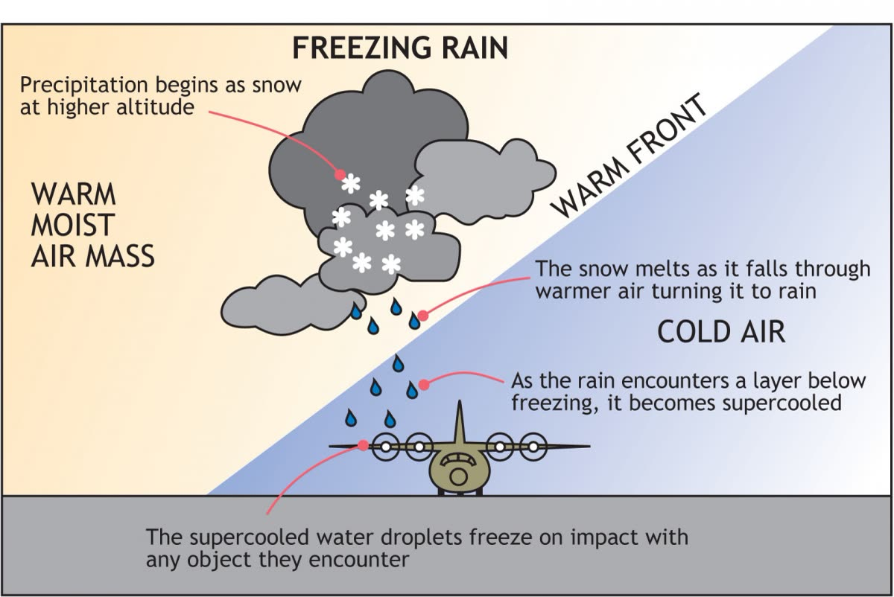
Freezing rain: snow melts in a warm layer aloft, then becomes supercooled in the cold air near the surface.
Supercooled water
Liquid water does not automatically freeze at 0 °C. Small, pure droplets can remain liquid well below freezing — in theory down to about −40 °C. Such droplets are called supercooled. They are unstable: when one strikes a surface, such as a wing, a propeller or an engine inlet, it freezes partly or completely on impact.
Supercooled water is found in cloud, fog, drizzle and rain at sub-zero temperatures. It is the source of almost all airframe icing, both in flight and on the ground.
Precipitation types that matter
Type
METAR
How it forms
Why it matters
Freezing rain
FZRA
Snow melts in a warm layer aloft (a temperature inversion) and falls as rain into a sub-zero layer near the surface, becoming supercooled.
Forms clear ice rapidly. Holdover times are very short or not available. Heavy and moderate freezing rain normally prohibit take-off.
Freezing drizzle
FZDZ
Small supercooled drops, often from shallow stratus. It can form without a warm layer aloft.
A source of supercooled large droplets (SLD) in flight; it builds ice on the ground steadily.
Freezing fog
FZFG
Fog made of supercooled droplets.
Builds rime on parked and taxiing aircraft and engine fan blades. Engine run-ups may be required.
Snow (dry or wet)
SN
Ice crystals that grow in cloud. Wet snow falls when the temperature is near 0 °C.
Wet snow has a high water content and dilutes anti-icing fluid quickly, so holdover times are much shorter.
Snow grains
SG
Very small, opaque grains of ice, usually from stratus.
Treated like snow when holdover time guidelines are used.
Ice pellets
PL
Raindrops that refreeze while falling through a cold layer.
Fluid failure is hard to see, so special allowance times are used instead of holdover times.
Hail / small hail
GR / GS
Ice formed in convective cloud.
No holdover time guidelines for hail; small hail has limited allowance times.
Blowing snow
BLSN
Snow lifted from the ground by wind.
Re-contaminates treated surfaces and reduces visibility. Snow intensity is assessed from the falling snow only.
The prefixes -, no sign and + indicate light, moderate and heavy intensity. Because intensity strongly affects holdover times, check it every time you read a report.
Frost
Frost forms when a surface cools to below the frost point of the surrounding air, typically on clear, calm nights through radiative cooling. It can also form on a wing that has been cold-soaked by very cold fuel, even when the air temperature is above 0 °C. This is cold-soaked fuel frost (CSFF). Frost that is still forming is called active frost, and it affects holdover times.
Temperature inversions
In winter, cold, dense air often collects in valleys and over high plateaus, with warmer air above. Inversions trap fog and low cloud for days and create the warm layer aloft that produces freezing rain. On the northern high plateaus and mountain airports of our network, an inversion can mean freezing fog at the field while the air a few thousand feet above is several degrees warmer.
Reading the reports
METAR: check the weather group (e.g. -FZDZ BR), the temperature/dew point spread (a small spread means fog or frost is likely), and the runway state or runway condition information.
TAF: look for TEMPO, BECMG and PROB groups that bring freezing precipitation or snow within your departure or arrival window.
Trends: a falling temperature with a small dew point spread at dusk is the classic frost and freezing fog set-up.
Pilot reports, radar and satellite confirm what the reports suggest. A front or a terrain effect can change the precipitation type within minutes.
Good practice
Brief the expected winter threats before departure: precipitation type and intensity, temperature trend, runway condition and de-icing plan. Update the brief whenever the weather changes.
Key takeaways
Supercooled droplets freeze on impact; they cause almost all airframe icing.
Freezing rain needs a warm layer aloft; freezing drizzle and freezing fog do not.
Precipitation type and intensity drive holdover times — check them every time.
Cold-soaked fuel can create frost on wings even above 0 °C.
Knowledge check
A METAR reports +SN. What does the “+” mean for your de-icing planning?
Snow is ending soon
Heavy snow — holdover times will be short or may not exist
Snow mixed with rain
Snow at the aerodrome but not on the runway
Answer: B. “+” indicates heavy intensity. Heavy snow sharply reduces holdover times; for some fluids and temperatures no holdover time is published.
Module 1 · Foundations
Lesson 03: Frost, Ice and Snow — Types and Hazards
Lesson 3 of 30 · about 8 min
Learning objectives
Identify the main forms of aircraft surface contamination.
Describe the specific hazard of each contaminant.
Recognise the conditions that produce clear ice on a cold-soaked wing.
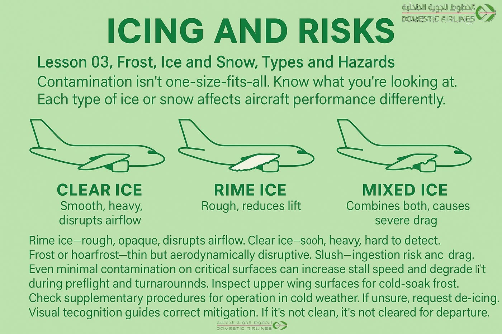
Clear, rime and mixed ice — each affects the aircraft differently.
What counts as contamination
Any frost, ice, snow or slush that adheres to or sits on an aircraft surface is contamination. Even a thin, smooth-looking layer changes the shape and roughness of the surface. The main types are listed below.
Contaminant
Description
Specific hazard
Frost (hoar frost)
Thin, white crystalline deposit formed by direct deposition of water vapour.
Surface roughness. Even thin frost can significantly reduce lift and raise the stall speed.
Cold-soaked fuel frost (CSFF)
Frost or ice on wing surfaces above or below fuel tanks containing very cold fuel.
Can form at positive air temperatures and on a clear day; it often appears on the lower wing surface first.
Clear (glaze) ice
Transparent, smooth, hard ice from freezing rain or drizzle, or from rain on a cold-soaked wing.
Very difficult to see; may look like a wet wing. Can break off and be ingested by rear-mounted engines.
Rime ice
Opaque, white, rough ice from small supercooled droplets (freezing fog).
Builds on leading edges, probes, fan blades and propellers.
Dry snow
Fine snow that does not stick when the surface is cold. It can be blown off.
Sticks to a warm or wet surface and can melt and refreeze. Never assume it will blow off on take-off.
Wet snow
Snow with high liquid water content, near 0 °C.
Adheres readily, adds weight, and dilutes anti-icing fluid very quickly.
Slush
Water-saturated snow that splashes.
Thrown onto flaps, gear and engines during taxi; can refreeze in flight. On runways it causes drag and reduces braking.
Clear ice on a cold-soaked wing
After a long flight at altitude, the fuel in the wing tanks can remain far below 0 °C for hours. If the aircraft is then exposed to rain, drizzle, fog or high humidity on the ground, the water freezes on the cold wing skin and forms clear ice. This can happen at outside air temperatures of +5 °C or more.
Watch for
The conditions are cold fuel (large fuel quantity left in the tanks after a long sector, or cold fuel uploaded), precipitation or high humidity, and air temperature near or above freezing. Clear ice cannot be reliably detected by eye — a tactile check by hand (or with an approved detection system) is required. See Lesson 12.
Acceptable deposits
Some AFMs permit specific, limited deposits. Typical examples are a thin layer of hoar frost on the upper fuselage, or CSFF on the lower wing surface in a defined area. These are exceptions written into the AFM for a particular type, with exact limits. If your AFM does not explicitly allow a deposit, it must be removed.
"Thin hoar frost" usually means a uniform white deposit thin enough that surface features — paint lines, markings and lettering — can still be seen through it.
Key takeaways
All frost, ice, snow and slush on critical surfaces is contamination.
Clear ice looks like a wet wing; it must be checked by touch.
Cold-soaked fuel can produce frost or clear ice well above 0 °C.
Only deposits explicitly permitted by the AFM, within its limits, are acceptable.
Knowledge check
An aircraft arrives after a long sector with plenty of fuel remaining. It is +4 °C with light drizzle. What is the main concern?
Fuel freezing in the tanks
Clear ice forming on the cold-soaked wing
Brake overheating
No concern — the temperature is above freezing
Answer: B. Cold-soaked fuel keeps the wing skin below 0 °C; drizzle freezes on it as clear ice, which is hard to see and must be checked by touch.
Module 1 · Foundations
Lesson 04: Aircraft Icing — On the Ground and in Flight
Lesson 4 of 30 · about 8 min
Learning objectives
Distinguish ground icing from in-flight icing.
State the standard definition of icing conditions used for engine and wing anti-ice.
Describe the main types and intensities of in-flight icing.
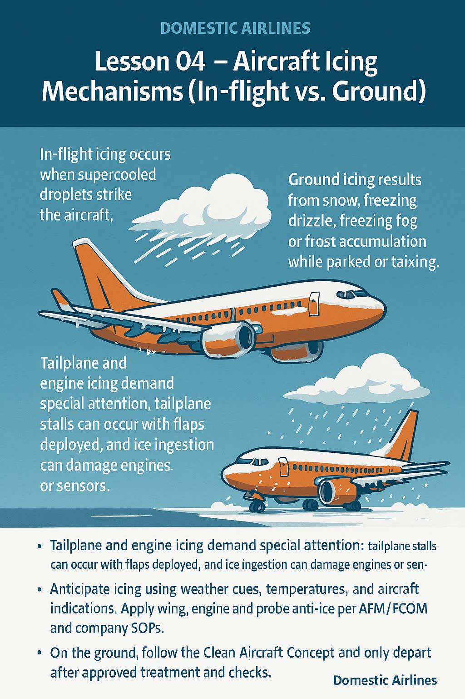
Ground icing and in-flight icing have different sources and different defences.
Ground icing
On the ground the aircraft is exposed to precipitation, frost, freezing fog and slush from taxiways for as long as it is parked or taxiing. Ground icing is managed with de-icing and anti-icing fluids and inspections. The aircraft's own ice protection systems are not designed to clean wings on the ground.
Main sources:
Frost and freezing fog on parked aircraft;
Falling snow, freezing rain, drizzle and ice pellets;
Cold-soaked fuel frost and clear ice;
Slush and spray from taxiways and runways;
Blowing snow and snow blown by other aircraft's jet blast.
Icing conditions — the standard definition
Definition (typical AFM wording)
Icing conditions exist when the outside air temperature (on the ground and for take-off) or total air temperature (in flight) is 10 °C or below, and visible moisture in any form is present — cloud, fog with visibility of 1 600 m (1 statute mile) or less, rain, snow, sleet or ice crystals.
On the ground, icing conditions also exist when the OAT is 10 °C or below and there is snow, ice, standing water or slush on ramps, taxiways or runways that may be ingested by the engines or freeze on engines, nacelles or engine sensor probes.
This definition tells you when to use engine anti-ice (and, in flight, wing anti-ice according to the AFM). Always use the exact wording and limits in your own AFM/FCOM.
In-flight icing
Type
Conditions
Appearance
Rime
Small droplets, colder temperatures, stratiform cloud
Opaque, white, rough; forms on leading edges
Clear (glaze)
Large droplets, temperatures near 0 °C to about −10 °C, cumuliform cloud or freezing rain
Transparent, dense; can run back and form horns or ridges
Mixed
Combination of the above
Rough and partly clear
Supercooled large droplets (SLD)
Freezing drizzle and freezing rain
Ice forms behind the protected areas, where ice protection systems cannot remove it
Pilots report icing intensity as trace, light, moderate or severe. Severe icing is a rate at which the ice protection systems cannot reduce or control the hazard; immediate exit from the conditions is required.
Why the distinction matters
Ground contamination affects the whole upper surface of the wing and tail, which is where lift is generated. In-flight ice protection systems only protect leading edges, engine inlets, probes and windows. A wing that leaves the ground contaminated cannot be cleaned by switching on anti-ice.
Key takeaways
Icing conditions: OAT/TAT 10 °C or below with visible moisture, or contaminated surfaces on the ground.
Ground icing is removed with fluids — not with the aircraft's ice protection systems.
SLD forms ice behind protected areas; exit the conditions.
Knowledge check
On the ground the OAT is +8 °C and there is slush on the taxiways but no precipitation. Are icing conditions present?
No — there is no visible moisture in the air
Yes — slush that may be ingested at OAT 10 °C or below counts as icing conditions
Only if the temperature falls below 0 °C
Only at night
Answer: B. On the ground, snow, ice, standing water or slush on surfaces that may be ingested, with OAT 10 °C or below, meets the typical icing conditions definition.
Module 1 · Foundations
Lesson 05: The Clean Aircraft Concept
Lesson 5 of 30 · about 9 min
Learning objectives
State the Clean Aircraft Concept and its regulatory basis.
List the critical surfaces that must be free of contamination.
Explain the aerodynamic effects of contamination on lift, drag, stall and control.
The effects of icing are cumulative: less lift and thrust, more drag and weight, higher stalling speed.
The rule
Clean Aircraft Concept
No one may take off in an aircraft with frost, ice, snow or slush adhering to the wings, control surfaces, propellers, engine inlets or other critical surfaces, except as specifically permitted by the AFM.
This principle appears in ICAO Annex 6, EASA Air Operations (CAT.OP.MPA.250), FAA 14 CFR 121.629 and the Domestic Airlines Operations Manual. There is no "small amount is acceptable" rule. The commander has the final responsibility for making sure the aircraft is clean.
Critical surfaces
Wings: upper and lower surfaces, leading-edge devices (slats), flaps and spoilers;
Horizontal and vertical stabilisers, elevators and rudder;
Ailerons and all other control surfaces, including their gaps and hinges;
Propellers, engine inlets and fan blades;
Upper fuselage on aircraft with rear-mounted engines (ice shed into the engines);
Air data probes and static ports, angle-of-attack vanes and ice detectors;
Landing gear, gear doors and fuel tank vents.
What contamination does
Research and accident investigations show that frost, ice or snow with roughness similar to medium or coarse sandpaper on the wing upper surface can:
reduce maximum lift by up to about 30 %;
increase drag by up to about 40 %;
reduce the stall angle of attack, so the wing stalls at a lower angle and a higher speed;
cause stall without warning, because stall warning systems are scheduled for a clean wing;
cause asymmetric lift and roll-off at or just after rotation;
restrict or jam control surfaces, and increase weight;
break off and damage engines, especially rear-mounted engines.
Illustrative only. Roughness no thicker than coarse sandpaper lowers maximum lift and the stall angle of attack. The aircraft can stall before the stall warning activates.
Why take-off is the critical moment
At rotation the aircraft is heavy, slow and pitching to a high angle of attack, close to the ground. This is exactly where contamination removes the safety margin. A contaminated aircraft may rotate normally and then fail to climb, roll uncommanded, or stall in ground effect before the stall warning activates.
Remember
Do not assume contamination will blow off during the take-off roll. Snow and frost that look loose may be frozen to the surface underneath.
Key takeaways
No frost, ice, snow or slush on critical surfaces at take-off — unless the AFM explicitly allows it.
Sandpaper-like roughness: up to ~30 % less lift and ~40 % more drag.
A contaminated wing can stall before the stall warning activates.
The commander has the final responsibility for a clean aircraft.
Knowledge check
Why might a contaminated wing stall without any stall warning?
The stall warning system is inhibited on the ground
Contamination lowers the stall angle of attack below the angle at which the warning is set for a clean wing
Anti-icing fluid blocks the angle-of-attack vanes
Stall warning only works with flaps retracted
Answer: B. Stall warning is scheduled for a clean wing. Contamination lowers the critical angle of attack, so the wing can stall before the warning angle is reached.
Module 2 · De-icing and Anti-icing
Lesson 06: De-icing and Anti-icing Principles
Lesson 6 of 30 · about 8 min
Learning objectives
Distinguish de-icing from anti-icing.
Describe one-step and two-step procedures and when holdover time starts.
Identify the main safety considerations for treatment.
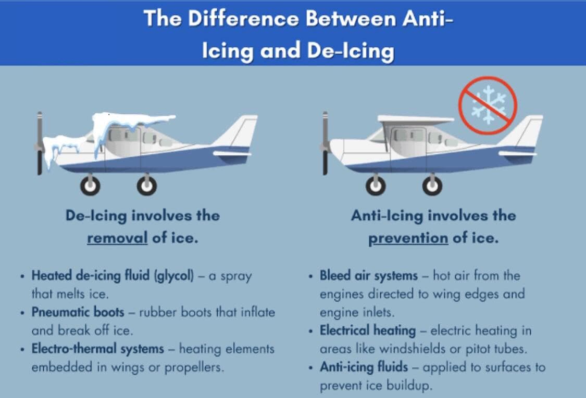
De-icing removes contamination; anti-icing prevents it for a limited time.
Two different jobs
De-icing removes frost, ice, snow or slush from the aircraft so that surfaces are clean. It is normally done with heated fluid (often Type I, or diluted Type II/IV), at a minimum of 60 °C at the nozzle. Hot water may be used at some temperatures if the procedure allows it. Some facilities use forced air or infrared heating.
Anti-icing protects clean surfaces against new accumulation for a limited period — the holdover time. It is normally done with thickened fluid (Type II, III or IV), applied unheated or heated, onto a surface that is already clean.
When no precipitation is falling and no frost is forming, de-icing alone may be enough. When precipitation is falling, or is expected before take-off, anti-icing is required.
One-step and two-step procedures
One-step: a single application of heated, freezing-point-depressant (FPD) fluid cleans the aircraft and leaves a protective film. It is used when the expected holdover time from that fluid is enough.
Two-step: the first step removes the contamination; the second step applies an anti-icing fluid for longer protection. The second step must be applied before the first-step fluid freezes — typically within 3 minutes — and treatment is done area by area if necessary.
The holdover time always starts at the beginning of the final application, not at the end.
Safety principles
The aircraft must be configured as the AFM and de-icing procedures require before spraying starts (Lesson 9).
No aircraft movement, engine power change or configuration change during treatment unless the de-icing crew is told and agrees.
Treatment must be symmetrical: if one wing is treated, the other wing must receive the same treatment.
Fluid makes the ramp extremely slippery for people and vehicles.
Glycol fumes in the cabin or flight deck must be prevented by switching off bleed air as required; report any smell or smoke.
A post de-icing/anti-icing check is mandatory after treatment (Lesson 12).
Responsibilities
The de-icing service provider is responsible for the quality of the treatment and the post-treatment check. The commander remains responsible for accepting the aircraft as clean and for deciding whether it remains clean until take-off.
Key takeaways
De-icing removes contamination; anti-icing prevents new accumulation for a limited time.
Two-step: second step within about 3 minutes, before the first-step fluid freezes.
Holdover time starts at the beginning of the final application.
Treatment must be symmetrical, and a post-treatment check is mandatory.
Knowledge check
In a two-step procedure, when does the holdover time start?
At the start of step one
At the end of step one
At the beginning of step two (the final anti-icing application)
When the aircraft starts to taxi
Answer: C. Holdover time always starts at the beginning of the final (anti-icing) application.
Module 2 · De-icing and Anti-icing
Lesson 07: De-icing and Anti-icing Fluids: Types I, II, III and IV
Lesson 7 of 30 · about 9 min
Learning objectives
Compare the four SAE fluid types by composition, colour, use and holdover time.
Explain fluid concentration and the Lowest Operational Use Temperature (LOUT).
Recognise problems caused by thickened fluid residues.
De-icing/anti-icing fluids are colour-coded by type: I orange, II pale yellow, III bright yellow, IV green.
The four fluid types
Aircraft de-icing/anti-icing fluids are mainly glycol (propylene or ethylene) and water. They are qualified to SAE specifications: AMS1424 for Type I and AMS1428 for Types II, III and IV.
Type
Thickened?
Typical colour
Main use
Relative holdover time
I
No — low viscosity, flows off quickly
Orange
De-icing (heated); short-term protection
Short
II
Yes (pseudoplastic)
Colourless to pale yellow
Anti-icing for aircraft with rotation speeds above about 100 kt
Medium to long
III
Yes
Bright yellow
Anti-icing for aircraft with lower rotation speeds (about 60 kt and above); some are approved heated for de-icing
Between I and II
IV
Yes
Green
Anti-icing for aircraft with rotation speeds above about 100 kt
Longest
Thickened fluids stay on the wing while the aircraft is stationary, then thin and shear off under the airflow of the take-off roll, so that the wing is clean at rotation. This is why a thickened fluid is only approved for aircraft whose take-off speed is high enough for it to flow off, as tested in the aerodynamic acceptance test. Use only fluids approved for your aircraft type.
Concentration
Fluids are applied neat or mixed with water. The mix is written as fluid/water:
Type I is always diluted for use, according to the temperature.
Lowest Operational Use Temperature (LOUT)
Each fluid and mix has a LOUT. It is the higher of:
the temperature at which the fluid passes the aerodynamic acceptance test for the aircraft category, and
the fluid's freezing point plus a buffer — 10 °C for Type I and 7 °C for Types II, III and IV.
A fluid must not be used at an OAT (or aircraft skin temperature, if lower) below its LOUT.
Fluid residues
Repeated application of thickened fluids — particularly with one-step treatments using Type II or IV — can leave dried residue in aerodynamically quiet areas: control surface gaps, hinges, balance bays and trailing edges. The residue can rehydrate in rain or humidity, swell into a gel and freeze at altitude, restricting flight controls. Report any stiff or unusual control feel to maintenance (Lesson 23).
Handling cautions
Do not spray thickened fluid onto cockpit windows — it smears and reduces visibility.
Fluids are slippery and environmentally controlled; follow ramp and environmental rules.
Fluid brands within a type have different holdover times. Use the brand-specific table when the fluid name is known.
Key takeaways
Type I: unthickened, orange, de-icing, short protection. Types II and IV: thickened, longer protection, for faster aircraft. Type III: for lower rotation speeds.
Concentration is written fluid/water — 100/0 gives the longest protection.
LOUT: freezing point + 10 °C (Type I) or + 7 °C (II/III/IV), or the aerodynamic limit, whichever is higher.
Thickened fluid residues can freeze in control surface gaps.
Knowledge check
Which fluid normally provides the longest holdover time?
Type I
Type II 50/50
Type IV 100/0
Hot water
Answer: C. Neat (100/0) Type IV fluid normally provides the longest protection.
Module 2 · De-icing and Anti-icing
Lesson 08: Holdover Times and Allowance Times
Lesson 8 of 30 · about 10 min
Learning objectives
Define holdover time and explain its limits.
Use holdover time guidelines correctly, step by step.
Explain allowance times for ice pellets and small hail, and the factors that shorten protection.
Example of a holdover time table — illustration only. Always use the current season's official tables.
Definition
Holdover time (HOT) is the estimated time for which an anti-icing fluid will prevent frost or ice from forming and snow from accumulating on the treated surfaces of an aircraft. It starts at the beginning of the final application of fluid and ends when the fluid is expected to lose its effectiveness (fluid failure).
HOT guidelines are published each winter season by the FAA and Transport Canada and are used worldwide. The Domestic Airlines Operations Manual states which tables crews must use. Tables change every year, so always use the current season's tables.
Holdover time is a guideline, not a guarantee
Tables are based on tests in controlled conditions. Heavy precipitation, high moisture content, strong wind, jet blast, and an aircraft skin colder than the air all shorten the real protection time. If the surfaces show signs of contamination, the aircraft is not clean, however much holdover time remains.
Using the tables — step by step
Identify the fluid from the anti-icing code: type, brand if known, and concentration (e.g. Type IV, 100/0).
Select the correct table — brand-specific if the fluid is known, otherwise the generic table for that type.
Find the OAT row. Use the outside air temperature, and check it is not below the fluid's LOUT.
Find the precipitation column — frost, freezing fog, snow/snow grains, freezing drizzle, light freezing rain, rain on a cold-soaked wing. Assess snow intensity from the snowfall intensity as a function of visibility table, not just from the METAR.
Read the time range. The shorter value applies to the heavier end of that intensity category, the longer value to the lighter end. Use the shorter time when conditions are at the heavier end or uncertain.
Note the start time from the anti-icing code and calculate when the HOT ends. Write it down and brief it.
Keep reassessing. If the precipitation type or intensity changes, recalculate. If no HOT exists for the new conditions, the aircraft must return for treatment.
When holdover time is exceeded
If the HOT has run out before take-off, take-off is only permitted if a pre-take-off contamination check shows the critical surfaces are clean, carried out within 5 minutes before beginning the take-off (Lesson 13). Otherwise the aircraft must be re-treated.
Allowance times
In ice pellets and small hail, and mixes of these with other precipitation, fluid failure is difficult to see. Instead of holdover times, the tables give allowance times for specific Type III and Type IV fluids. Allowance times:
start at the beginning of the final application, like a HOT;
cannot be extended by a pre-take-off contamination check — when the allowance time is exceeded, the aircraft must be re-treated;
may carry extra restrictions, such as maximum rotation speed or limits on flap configuration.
Conditions with no holdover time
No HOT guidelines exist for moderate or heavy freezing rain, hail, or heavy ice pellets. Take-off in these conditions is generally not authorised. Check the Operations Manual for heavy snow, which has guidelines for some fluids only.
Key takeaways
HOT starts at the beginning of the final application and is only an estimate.
Use the current season's tables, the correct fluid and concentration, OAT and precipitation type/intensity.
HOT exceeded → pre-take-off contamination check within 5 minutes of take-off, or re-treat.
Allowance times (ice pellets, small hail) cannot be extended — re-treat when they expire.
Knowledge check
An allowance time for ice pellets has expired while you hold for take-off. What is the correct action?
Carry out a pre-take-off contamination check and depart if clean
Depart immediately because ice pellets bounce off
Return for re-treatment
Switch on wing anti-ice and depart
Answer: C. Allowance times cannot be extended by a pre-take-off contamination check. When the allowance time expires, the aircraft must be re-treated.
Module 2 · De-icing and Anti-icing
Lesson 09: Preparing the Aircraft and Protecting Sensitive Areas
Lesson 9 of 30 · about 8 min
Learning objectives
Configure the aircraft for de-icing according to the AFM/FCOM.
Identify areas that must not be sprayed directly.
Describe good application practice from the crew's point of view.
Application from an elevated basket: the nozzle, the liquid spray and the contaminated surface.
Typical aircraft configuration for treatment
Each aircraft type has a de-icing configuration in the FCOM or the company manuals. Typical items are:
Parking brake set (or brakes held as the pad procedure requires) and the aircraft stationary;
Engines shut down or at idle, as the AFM and the facility procedure require; APU running if required;
Air conditioning packs and APU bleed off (or as specified) to prevent fluid fumes entering the cabin and flight deck;
Flaps and slats retracted, unless the AFM requires another setting;
Flight controls neutral, and stabiliser trim as specified;
Doors and windows closed;
Probe/window heat and other systems as the FCOM specifies.
Confirm the configuration to the de-icing crew before spraying begins (Lesson 10).
Areas that must not be sprayed directly
Area
Why
Pitot probes, static ports, AoA vanes, TAT probes, ice detectors
Fluid residue causes erroneous air data and warnings
Engine inlets, exhausts, thrust reversers; APU inlet and exhaust
Fluid ingestion causes fumes and smoke in the cabin, and possible engine damage
Cockpit and cabin windows
Thickened fluid smears and reduces visibility
Brakes and wheels
Fluid on hot brakes can catch fire or produce smoke
Landing gear bays, electrical connectors and antennas
Contamination of components and connectors
Control surface gaps and balance bays (high-pressure spray)
Forces contamination and fluid into gaps, where residue can collect and freeze
Good application practice
De-icing crews follow their own procedures (SAE AS6285). As a crew member it helps to know what "good" looks like:
Spraying generally works from the highest point downward and from the leading edge rearward, so that contamination is pushed off the aircraft, not onto clean areas.
Hot fluid is used close to the surface for de-icing, to transfer heat. Anti-icing fluid is applied as an even, complete layer.
Both sides of the aircraft are treated in the same way.
The vertical and horizontal stabilisers, which you cannot see from the flight deck, are treated and checked.
Treatment of the fuselage depends on the AFM and conditions. On rear-engine aircraft the upper fuselage is a critical surface.
During treatment
Do not change configuration, move control surfaces, change engine power or move the aircraft until the de-icing crew confirms that all personnel and equipment are clear.
Key takeaways
Configure the aircraft exactly as the FCOM specifies before spraying starts.
Packs and APU bleed off (or as specified) prevent glycol fumes in the cabin.
No direct spray on probes, engine and APU inlets, windows, brakes or control surface gaps.
No movement or configuration change until the de-icing crew confirms all clear.
Knowledge check
Why are the air conditioning packs and APU bleed normally switched off during de-icing?
To save fuel
To prevent glycol fumes entering the cabin and flight deck
To keep the engines warm
To reduce noise for the de-icing crew
Answer: B. Fluid drawn into the APU or engine inlets would be carried into the air conditioning system and cause fumes or smoke in the cabin and flight deck.
Module 2 · De-icing and Anti-icing
Lesson 10: Communication with the De-icing Crew and the Anti-icing Code
Lesson 10 of 30 · about 8 min
Learning objectives
Use a structured communication sequence before, during and after treatment.
Read and record the anti-icing code.
Apply closed-loop communication under time pressure.
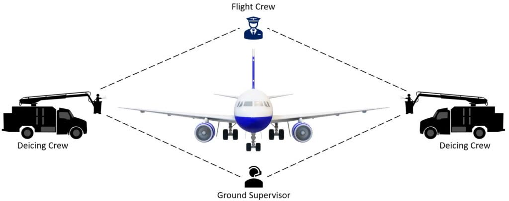
Everyone involved in the treatment — flight crew, de-icing crews and supervisor — must share one communication plan.
Why communication matters
The flight crew cannot see most of what happens during de-icing. The de-icing crew cannot see inside the flight deck. Several accidents and serious incidents happened because one side assumed what the other was doing — engines moved while people were near the aircraft, or an aircraft taxied with parts of it untreated. Communication must follow a standard sequence and use closed-loop read-back.
Before treatment
Establish contact on the agreed radio frequency or interphone.
The crew confirms the aircraft is configured for de-icing and the brakes are set.
Agree the treatment: de-icing only, one-step or two-step, fluid type and concentration, and the areas to treat.
Make a PA to the passengers (and inform cabin crew) that de-icing is about to begin; they will hear noise and may smell fluid.
After treatment — the anti-icing code
When treatment and the post-treatment check are complete, the de-icing crew passes the anti-icing code. The SAE AS6285 format contains:
Fluid type (I, II, III or IV);
Concentration, as fluid/water percentage (not needed for Type I);
Local time at the beginning of the final application;
Date (written record);
The statement “post de-icing/anti-icing check completed”.
Where a brand name is known, it may also be given so you can use brand-specific tables.
De-icing crew: “Domestic 247, treatment complete. Anti-icing code: Type four, one hundred percent, start time one four three five, post de-icing anti-icing check completed.”
Flight crew: “Type four, one hundred, one four three five, check completed — Domestic 247.”
De-icing crew: “All personnel and equipment clear. Contact ground on one two one decimal niner.”
Flight crew: “Clear, ground one two one decimal niner, Domestic 247.”
Example only — use the phraseology in the Operations Manual and the local de-icing procedures.
Using the code
Read the code back in full. Write it on the flight log or enter it as the company procedure requires.
Calculate the HOT using the fluid, concentration and current conditions, and brief the end time.
Do not move the aircraft, start engines or change configuration until the "all clear" call.
Under time pressure
De-icing usually happens at the busiest moment of a winter departure. Slow down: use standard phrases, read back every number, and ask again if anything is unclear. Thirty seconds of clarification is cheaper than a return to the pad — or an accident.
Key takeaways
Confirm configuration, brakes set and the treatment plan before spraying starts.
Anti-icing code: fluid type, concentration, start time of final step, date, check completed.
Read back the code and calculate HOT from the start time of the final application.
Do not move until the de-icing crew calls “all personnel and equipment clear”.
Knowledge check
Which time in the anti-icing code do you use to calculate holdover time?
The time the de-icing truck arrived
The time treatment finished
The local time at the beginning of the final application
The time you received the code
Answer: C. The anti-icing code gives the local start time of the final application, which is when holdover time begins.
Module 2 · De-icing and Anti-icing
Lesson 11: Gate and Remote De-icing Operations
Lesson 11 of 30 · about 7 min
Learning objectives
Compare gate de-icing with remote (pad) de-icing.
Describe a typical remote de-icing pad procedure.
Manage the time between treatment and take-off.
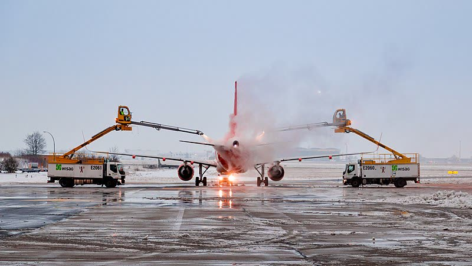
Remote pad de-icing brings the treatment closer to the runway.
Two ways to de-ice
At the gate / stand
Remote pad or central facility
Engines
Normally shut down; APU running
Normally running at idle (per AFM and facility procedure)
Distance to runway
Longer taxi — more holdover time used before take-off
Close to the departure runway — less holdover time used
Communication
Ground crew via interphone or radio
Pad control / de-icing coordinator by radio, then the vehicle operator
Main risks
HOT running out during pushback and taxi
Wrong position on the pad, engines near personnel, confusion between ATC, pad control and the de-icing crew
A typical remote pad procedure
Before taxi, check the airport de-icing procedures (charts, NOTAMs, frequencies) and brief the sequence.
ATC or the coordinator assigns a pad. Taxi in following the lead-in line and marshaller or stop-position signs, and stop on the stop line.
Set the parking brake and configure the aircraft for de-icing. Report "configured" on the pad frequency.
Agree the treatment and receive the start call. Hold position — no movement, power or configuration change.
Receive the anti-icing code and the "all personnel and equipment clear" call.
Only then reconfigure, complete the after de-icing checks, and contact ATC to leave the pad as instructed.
Managing the time to take-off
Coordinate with ATC before treatment so that you are not de-iced and then held for a long time.
Taxi at a safe speed with good separation. Avoid the jet blast of the aircraft ahead, which blows snow and slush onto treated surfaces and thins the fluid.
Some AFMs recommend delaying flap extension until close to the runway when taxiing through slush or snow. Others require flaps to be set before anti-icing so that the surfaces are protected. Follow your FCOM.
Continuously compare the remaining holdover time with the expected take-off time. If it will not be enough, decide early — a planned return for re-treatment is better than a rushed decision at the holding point.
Key takeaways
Gate de-icing uses more holdover time; pad de-icing is closer to the runway but more complex.
On the pad, stay stationary and configured until “all clear” is received.
Keep clear of jet blast and compare remaining HOT with the expected take-off time.
Knowledge check
During remote pad de-icing, when may you reconfigure the aircraft and prepare to taxi?
As soon as spraying stops
When the anti-icing code is received and the de-icing crew confirms all personnel and equipment are clear
When ATC gives a taxi clearance
When the last de-icing truck starts to move
Answer: B. Reconfiguring or moving is only safe after the treatment is complete, the code is received and the de-icing crew confirms all personnel and equipment are clear.
Module 3 · Inspections
Lesson 12: Inspections: Walk-around, Clear Ice and the Post-treatment Check
Lesson 12 of 30 · about 8 min
Learning objectives
Perform a winter-specific exterior inspection.
Know when a tactile check for clear ice is required.
Describe the purpose and scope of the post de-icing/anti-icing check.
A tactile check is the only reliable way to detect clear ice on a cold-soaked wing.
The winter walk-around
A cold weather exterior inspection takes longer and needs more light. Use a strong torch or the floodlights at night. In addition to the normal items, check:
Wings, tail and control surfaces — upper surfaces where they can be seen. Use steps or an elevated platform where required, because frost on the upper wing can be invisible from the ground.
Engine inlets and fan blades — free of ice; fan rotates freely (where permitted to check). Propellers clear.
Landing gear, wheel wells, brakes and tyres — no ice or packed snow; tyres not frozen to the ground.
Fuel tank vents and doors and seals — free of ice.
All covers and plugs removed and stowed.
Clear ice — when a tactile check is required
A tactile (hands-on) check of the wing upper surface, or the use of an approved remote ice detection system, is required when clear ice may be present. Typical conditions:
the aircraft has cold-soaked fuel (after a long or high-altitude flight, or after uploading cold fuel);
there is or has been precipitation, fog, high humidity or frost;
the OAT is near or even above freezing.
Many aircraft types have a defined area for the tactile check. On aircraft with rear-mounted engines it is often mandatory before every departure in these conditions. Ice that sheds from the wing at rotation can be ingested by both engines (see the SAS 751 case in Lesson 30).
Note
A wet-looking wing in cold conditions is not proof of a clean wing. If in doubt, touch it — or have it de-iced.
Post de-icing/anti-icing check
After treatment, a qualified member of the de-icing provider must check all treated surfaces from points with a clear view. Where needed this includes the upper wing from an elevated position, the horizontal and vertical stabilisers, and the control surfaces. The aircraft must be clean, with an even layer of anti-icing fluid where anti-icing was applied.
Completion of this check is confirmed in the anti-icing code. Without it, the aircraft must not be dispatched. The commander may still ask for any area to be re-checked or re-treated.
Commander's acceptance
The commander must be satisfied that the aircraft is clean. Use the information available to you: the code, your own observation of the wings, reports from cabin crew, and the weather since treatment.
Key takeaways
Winter walk-around: upper surfaces, inlets, probes, gear, vents and covers.
The post de-icing/anti-icing check is mandatory and confirmed in the anti-icing code.
Knowledge check
Which situation most clearly calls for a tactile check of the wing?
Dry, cold day with an empty fuel tank
After a long sector with cold fuel remaining, with drizzle at +3 °C
Hot day with heavy rain
After the aircraft has been in a heated hangar
Answer: B. Cold-soaked fuel together with drizzle near 0 °C is the classic clear ice condition. Clear ice is hard to see and must be checked by touch or an approved detection system.
Module 3 · Inspections
Lesson 13: The Pre-take-off Check and the Pre-take-off Contamination Check
Lesson 13 of 30 · about 8 min
Learning objectives
Distinguish the pre-take-off check from the pre-take-off contamination check (PTCC).
State when each is required, who performs it and how.
Recognise the signs of anti-icing fluid failure.
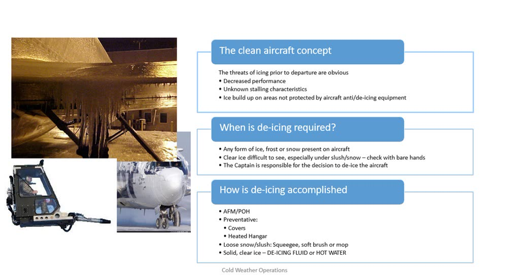
Before take-off, the question is always the same: are the critical surfaces clean?
Two different checks
Pre-take-off check
Pre-take-off contamination check (PTCC)
When
Within the holdover time, as part of the before-take-off actions
When the holdover time has been exceeded, or when the crew is in doubt
Timing
Before take-off, as conditions require
Within 5 minutes before beginning the take-off
Who / where
Flight crew, normally from inside the aircraft (wings or representative surfaces)
A qualified person, normally from outside the aircraft, or from inside only where an approved procedure allows it
What
The wings or representative surfaces that can be seen
The critical surfaces needed to confirm the aircraft is clean
If contamination is seen
Do not take off. Return for treatment.
A PTCC cannot be used to extend an allowance time (ice pellets, small hail) — see Lesson 8.
Signs of fluid failure
The surface loses its gloss and looks dull or matt;
Snow builds up on the surface rather than being absorbed;
Ice crystals or slush appear in the fluid;
Frozen fluid or a "slushy" texture, often starting at the leading edge or wing tips;
Accumulation on other surfaces, such as wiper blades or nose cone, while the HOT is still running (a useful early warning).
Fluid failure normally starts on the leading edge and wing tips, where the fluid layer is thinnest, and on surfaces exposed to wind.
Practical points
Use wing inspection lights at night. Check both sides.
Cabin crew may be asked to look at the wings, using the company procedure. They must know what they are looking for and how to report it.
If conditions get worse — heavier snow, a change to freezing rain — the HOT you calculated is no longer valid. Recalculate or return.
Decision point
Agree before taxi: “If the HOT expires before take-off and a PTCC is not available, we return for treatment.” A pre-briefed decision protects you from pressure at the holding point.
Key takeaways
Pre-take-off check: within HOT, flight crew, usually from inside.
PTCC: HOT exceeded, within 5 minutes of take-off, normally from outside the aircraft.
Dull surface, snow building up or ice crystals in the fluid mean fluid failure — return for treatment.
Pre-brief the decision to return before you taxi.
Knowledge check
The holdover time has expired while you queue for take-off. Snowfall continues. What is required to take off?
Nothing, provided the wings look clean from the flight deck
A pre-take-off contamination check within 5 minutes before take-off, normally from outside — otherwise re-treat
Engine and wing anti-ice on
A new anti-icing code by radio
Answer: B. With HOT exceeded, take-off is only permitted after a PTCC, completed within 5 minutes before take-off, that confirms the critical surfaces are clean. Otherwise the aircraft must be re-treated.
Module 4 · Runways and Performance
Lesson 14: Performance Effects of Cold Weather and Contamination
Lesson 14 of 30 · about 8 min
Learning objectives
Explain how runway contaminants affect acceleration and stopping.
Describe the performance penalties of anti-ice and contaminated runways.
Recognise the operational restrictions on reduced thrust and V1.
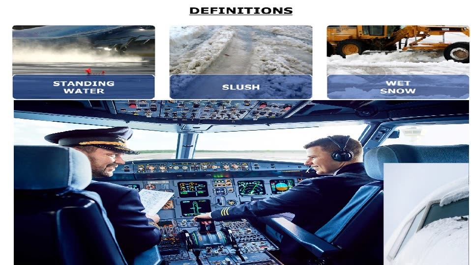
Runway contaminants: standing water, slush and wet snow each have a different effect on performance.
Two families of effects
Aircraft contamination (Lesson 5) reduces lift and increases drag and stall speed. Runway contamination affects acceleration, stopping and directional control. This lesson covers the runway.
Acceleration
Loose, wet contaminants — standing water, slush, wet snow and deep dry snow — slow the aircraft down through:
displacement drag: tyres pushing the contaminant aside;
impingement drag: spray striking the airframe, gear and flaps.
The deeper and denser the contaminant, the greater the drag. Drag peaks close to the aquaplaning speed. The result is a longer take-off distance and, after an engine failure, a longer accelerate-go distance.
Stopping and control
Braking friction is reduced on every contaminant. On ice it can be a fraction of a dry runway.
Aquaplaning reduces wheel braking and steering almost to zero (Lesson 16).
Crosswind limits are reduced, depending on the runway condition code.
The accelerate-stop distance grows. To compensate, performance calculations usually produce a lower V1 and may reduce the maximum take-off mass.
Operational rules
Typical restrictions — check your AFM
Reduced (assumed temperature / FLEX) thrust is not permitted on contaminated runways. A fixed derate may be permitted when contaminated runway data exists for it.
Use the contaminated runway performance data for the reported contaminant type and depth.
Maximum contaminant depth for take-off is limited by the AFM — typically around 12.7 mm (½ in) of standing water, slush or wet snow, with higher limits for dry snow.
Anti-ice and cold temperatures
Engine and wing anti-ice take bleed air, which reduces available thrust and climb performance. Performance tables include corrections when anti-ice is on.
Cold, dense air normally improves engine and aircraft performance, but very low temperatures may bring limits on engine thrust, oil temperature or fluid use.
Some types use higher approach or manoeuvring speeds when ice has accumulated on unprotected surfaces. Follow the FCOM's “ice accretion” speeds and performance corrections.
Key takeaways
Wet contaminants add drag and lengthen take-off; all contaminants reduce braking.
Contaminated runways usually mean a lower V1 and possibly a lower maximum take-off mass.
No assumed-temperature (FLEX) reduced thrust on contaminated runways.
Anti-ice reduces thrust — apply the performance corrections.
Knowledge check
What is the usual rule on assumed temperature (FLEX) reduced thrust when the runway is contaminated?
It is always required to protect the engines
It is not permitted
It is permitted if V1 is reduced by 10 kt
It is permitted at night only
Answer: B. Assumed temperature reduced thrust is not permitted on contaminated runways. A fixed derate may be allowed if the AFM provides contaminated runway data for it.
Module 4 · Runways and Performance
Lesson 15: Runway Condition Reporting: GRF, RCAM and RWYCC
Lesson 15 of 30 · about 10 min
Learning objectives
Explain the ICAO Global Reporting Format (GRF) and the Runway Condition Report (RCR).
Interpret runway condition codes (RWYCC) using the RCAM.
Make and use pilot braking action reports correctly.
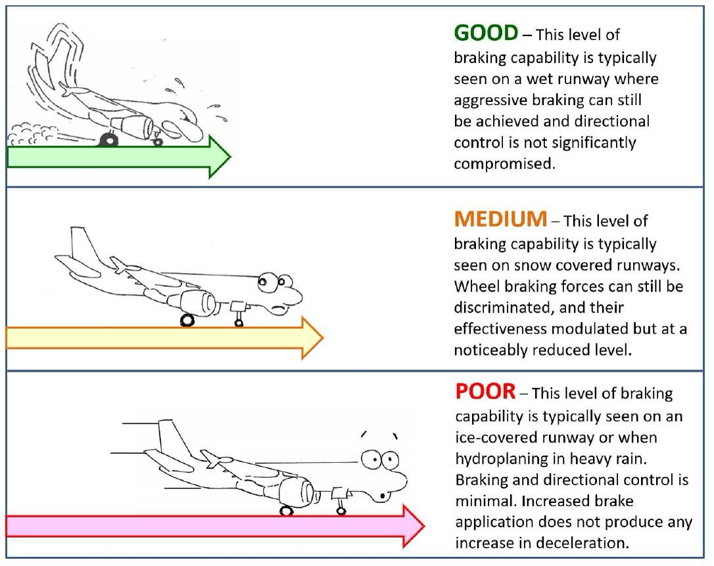
Braking action terms match the runway condition codes: good, medium, poor and the steps in between.
The Global Reporting Format
Since November 2021, ICAO's Global Reporting Format (GRF) has been the standard method for assessing and reporting runway surface conditions. Its purpose is to give pilots a common language that links directly to aircraft performance data. The FAA uses an equivalent system called TALPA.
The aerodrome operator assesses the runway and issues a Runway Condition Report (RCR), which reaches crews through ATIS, ATC and SNOWTAM.
Reading a Runway Condition Report
The aircraft performance part of the RCR is given for each third of the runway, in the direction of the lower runway designator:
Location and time of assessment (month, day, hour, minute UTC)
Runway
09
Lower runway designator
RWYCC per third
5/5/2
Runway condition code for each third
Coverage per third
100/100/50
Percentage of each third covered (reported as 25, 50, 75 or 100)
Depth per third
NR/NR/06
Depth in mm of loose contaminant (water, slush, dry or wet snow); NR = not reported
Contaminant per third
WET/WET/SLUSH
Type of surface condition
Example report 5/5/2: runway condition codes for each third, given in the direction of the lower runway designator.
The Runway Condition Assessment Matrix (RCAM)
RWYCC
Runway surface description
Pilot braking action
6
DRY
—
5
FROST; WET (including damp, and 3 mm of water or less); SLUSH, DRY SNOW or WET SNOW 3 mm or less
Good
4
COMPACTED SNOW at OAT −15 °C and below
Good to medium
3
WET (“slippery wet” runway); DRY SNOW or WET SNOW (any depth) ON TOP OF COMPACTED SNOW; DRY SNOW or WET SNOW more than 3 mm; COMPACTED SNOW at OAT above −15 °C
Medium
2
STANDING WATER more than 3 mm; SLUSH more than 3 mm
Medium to poor
1
ICE
Poor
0
WET ICE; WATER ON TOP OF COMPACTED SNOW; DRY SNOW or WET SNOW ON TOP OF ICE
Less than poor
The aerodrome may upgrade or downgrade a code using measurements, observations and pilot reports. A runway with RWYCC 0 is not used for take-off or landing.
Pilot braking action reports
Pilots report braking action using the same terms — good, good to medium, medium, medium to poor, poor, less than poor — for example: “Braking action medium to poor, runway 27, second half.”
Report whenever braking or directional control is worse than reported, or when asked.
Your report is an important input to the aerodrome's assessment and to the crew behind you.
Reports age quickly in active precipitation. Always check the time of the RCR and the trend.
Key takeaways
RCR is reported per runway third, in the direction of the lower designator.
RWYCC 6 = dry … 0 = less than poor. 2 = standing water or slush more than 3 mm; 1 = ice.
Use the reported codes directly with the performance data.
Report braking action that is worse than reported.
Knowledge check
A runway third is covered with 6 mm of slush. What RWYCC would normally be reported?
5
3
2
0
Answer: C. In the RCAM, standing water or slush deeper than 3 mm corresponds to RWYCC 2 (medium to poor).
Module 4 · Runways and Performance
Lesson 16: Take-off on Contaminated Runways
Lesson 16 of 30 · about 9 min
Learning objectives
Apply AFM contaminant depth and crosswind limits for take-off.
Explain aquaplaning and estimate aquaplaning speed.
Plan for a rejected take-off and directional control on a slippery runway.
Take-off on a contaminated runway needs contaminated-runway performance data — and a clear plan for a reject.
Before you start
Obtain the latest RCR. Confirm that the contaminant type and depth are within the AFM limits for take-off.
Calculate performance using the contaminated runway data and the reported RWYCC: no assumed-temperature reduced thrust, and possibly a lower V1 and mass.
Apply the reduced crosswind limit for the runway condition (Operations Manual / FCOM table).
Brief the rejected take-off: decision speed, directional control technique, and the effect of reverse thrust in a crosswind.
Aquaplaning
When a tyre rides on a layer of water or slush, it loses contact with the runway. Braking and steering become almost useless. The approximate minimum speed at which dynamic aquaplaning starts is:
Rule of thumb
VP (kt) ≈ 9 × √(tyre pressure in psi) for a rotating tyre (take-off). For a tyre that is not yet rotating, as at touchdown, the speed is lower — about 7.7 × √(tyre pressure).
Example: tyre pressure 196 psi → √196 = 14 → about 126 kt for a rotating tyre, about 108 kt at touchdown.
Other forms include viscous aquaplaning (a thin film on a smooth or rubber-coated surface) and reverted rubber aquaplaning (a locked wheel overheating and producing steam).
During the take-off roll
Where the AFM requires it, carry out a static run-up to shed fan ice. On a slippery surface the brakes may not hold, so use the technique in the FCOM.
Apply thrust symmetrically. Keep straight with the rudder, using small nosewheel steering inputs at low speed only.
Expect slower acceleration in slush or wet snow, and spray striking the airframe.
Rejected take-off on a slippery runway
Stopping distances are much longer. Up to V1, reject for the reasons in your SOPs. Above V1, continue.
Use maximum braking (or the RTO autobrake) and maximum reverse thrust as the procedure states.
Reverse thrust in a crosswind pushes the aircraft downwind and makes it weathervane. If the aircraft starts to drift off the centreline, the typical technique is: reduce reverse thrust towards idle, release the brakes momentarily, regain the centreline with rudder and steering, then reapply braking and reverse. Follow your FCOM.
After take-off
Slush and snow thrown onto the landing gear, flaps and wheel wells can freeze at altitude. Some AFMs recommend specific actions after a take-off from a slush-covered runway, such as delayed retraction or cycling the gear. Apply them only when your FCOM states them.
Key takeaways
Check contaminant type and depth against AFM limits; use contaminated runway performance.
Aquaplaning speed ≈ 9 × √(tyre pressure) for a rotating tyre, lower at touchdown.
In a crosswind RTO, reverse thrust can push you downwind — know the recovery technique.
Knowledge check
Tyre pressure is 144 psi. Approximately at what speed could dynamic aquaplaning begin during the take-off roll?
About 72 kt
About 108 kt
About 144 kt
About 160 kt
Answer: B. 9 × √144 = 9 × 12 = 108 kt for a rotating tyre.
Module 4 · Runways and Performance
Lesson 17: Landing on Contaminated Runways
Lesson 17 of 30 · about 9 min
Learning objectives
Perform a landing distance assessment at the time of arrival.
Apply landing techniques for slippery runways.
Recognise when to go around or divert.
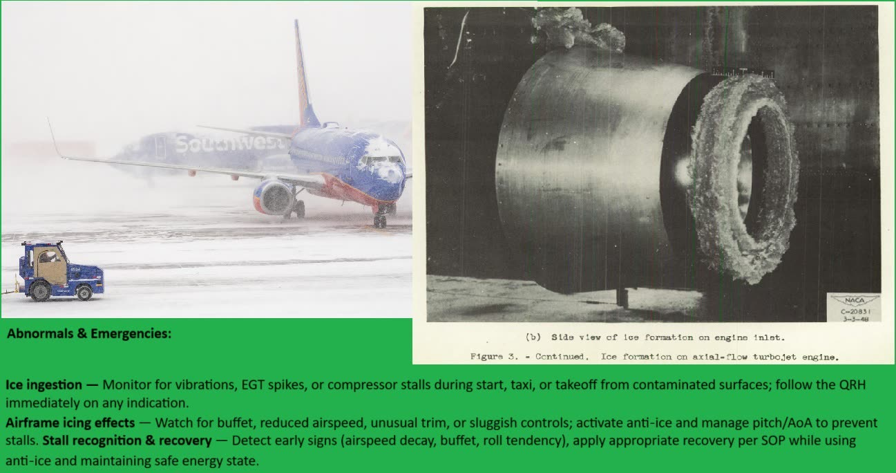
Landing on a contaminated runway: assess the landing distance at the time of arrival.
Landing distance assessment at the time of arrival
Runway conditions at the time of arrival may be very different from those used at dispatch. Before the approach — normally before top of descent and again if conditions change — calculate the landing distance at time of arrival using:
the latest RCR (RWYCC per third, contaminant and depth);
the planned autobrake setting and use of reverse thrust, as the performance data allows.
Add the safety margin required by the Operations Manual. Industry guidance recommends at least 15 % on the actual (unfactored) landing distance. If the result does not fit within the available landing distance, do not start the approach — hold, choose another runway, or divert.
Technique
Stabilised approach on speed, on profile, with the correct additives. Go around if the approach is not stabilised.
Touch down firmly in the touchdown zone. Do not float — every second of float uses runway you need for stopping. A firm touchdown helps the wheels spin up and break through the water film.
Lower the nosewheel promptly for steering and to put weight on the wheels.
Ground spoilers deployed, verified and called.
Reverse thrust early: maximum reverse as soon as possible after touchdown, as the SOP states. Reversers are most effective at high speed.
Braking: autobrake as planned, or steady manual braking with the anti-skid working. Do not pump the brakes.
Directional control with rudder. Use nosewheel steering at low speed, with small inputs. In a crosswind with reverse thrust, apply the same recovery technique as for the rejected take-off.
When to go around or divert
The approach is not stabilised, or the touchdown point will be beyond the touchdown zone.
The runway report changes during the approach to a code or contaminant for which the landing distance is not enough.
Braking action reports from preceding aircraft are worse than planned.
Once reverse thrust is selected, you are committed to stop. The decision to go around must be made before that.
After landing
Taxi slowly. Report braking action if it was worse than reported. On stand, consider the risk of brakes freezing after taxiing through slush. Use chocks and follow the SOP on releasing the parking brake (Lesson 19).
Key takeaways
Recalculate landing distance at the time of arrival, with at least the required margin (typically 15 %).
Firm touchdown in the zone, no float, spoilers, early maximum reverse, steady braking.
Go around before selecting reverse thrust if the landing is in doubt.
Knowledge check
Why is a firm touchdown preferred on a runway covered with water or slush?
To reduce the stress on the landing gear
To help the wheels spin up, break through the water film and avoid floating
To allow a longer flare
To keep the reverse thrust in idle
Answer: B. A firm touchdown in the touchdown zone avoids wasting runway, helps the wheels penetrate the water film and spin up, and reduces the risk of aquaplaning.
Module 4 · Runways and Performance
Lesson 18: Taxi Operations on Slippery Surfaces
Lesson 18 of 30 · about 7 min
Learning objectives
Taxi safely on contaminated aprons and taxiways.
Avoid contaminating treated aircraft and other aircraft.
Recognise the specific hazards of snowbanks and hidden markings.
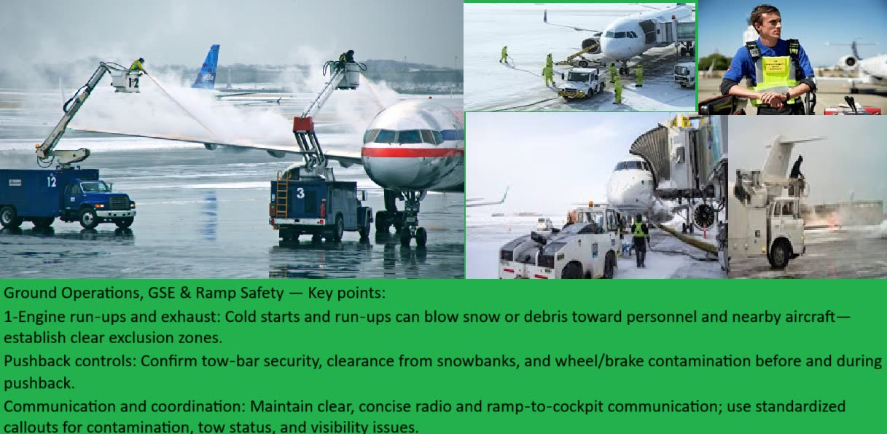
Ramps, taxiways and ground equipment all become hazards on slippery surfaces.
Speed, spacing and thrust
Taxi slowly, at walking pace on ice or poor surfaces. Plan turns early and make them at low speed.
Increase the spacing behind the aircraft ahead. You need more distance to stop, and you avoid its jet blast, which blows snow, slush and ice onto your treated surfaces.
Use the minimum breakaway thrust. High thrust on ice can make the aircraft slide or yaw.
Make small, smooth nosewheel steering inputs. A nosewheel that skids sideways does not steer.
If the aircraft starts to slide, reduce thrust to idle and apply braking and steering gently.
Snow and the airport environment
Snowbanks along taxiway edges can strike wing tips, engine nacelles and propellers. Check the NOTAM/SNOWTAM for cleared widths.
Markings and lights may be covered. Use the airport chart, request progressive taxi instructions if unsure, and confirm the holding position.
Ramp areas near de-icing pads are extremely slippery because of glycol.
Be aware of snow clearing vehicles and their crews, especially in low visibility.
Protecting the treated aircraft
Taxi with the flaps up through slush or snow if your FCOM allows it. Set them before the runway, and complete the checklist before take-off.
Do not taxi close behind other aircraft or through deep slush if it can be avoided.
Monitor the precipitation and the remaining HOT while you taxi.
Single-engine taxi in winter
Single-engine taxi may be restricted in winter. Engines may need a minimum warm-up before take-off thrust, asymmetric thrust is harder to control on slippery surfaces, and starting the second engine near the runway increases workload just when the HOT is running. Follow the Operations Manual.
Key takeaways
Slow taxi, larger spacing, minimum thrust, small steering inputs.
Snowbanks and covered markings are hidden threats — use charts and NOTAMs.
Keep clear of jet blast and deep slush to protect your treated surfaces.
Knowledge check
Why should you increase spacing behind other aircraft while taxiing after de-icing?
To save fuel
To stop safely on slippery surfaces and avoid jet blast blowing contamination onto your aircraft
Because ATC requires double separation in winter
To keep the engines warm
Answer: B. Extra spacing gives you room to stop on a slippery surface and keeps you out of jet blast, which can blow snow and slush onto treated surfaces and thin the fluid.
Module 5 · Aircraft Systems in the Cold
Lesson 19: Cold Soak, Overnight Parking and Pre-flight Preparation
Lesson 19 of 30 · about 8 min
Learning objectives
Protect an aircraft parked overnight in cold conditions.
Prepare a cold-soaked aircraft for flight.
Identify the effects of cold on tyres, brakes, water systems and batteries.
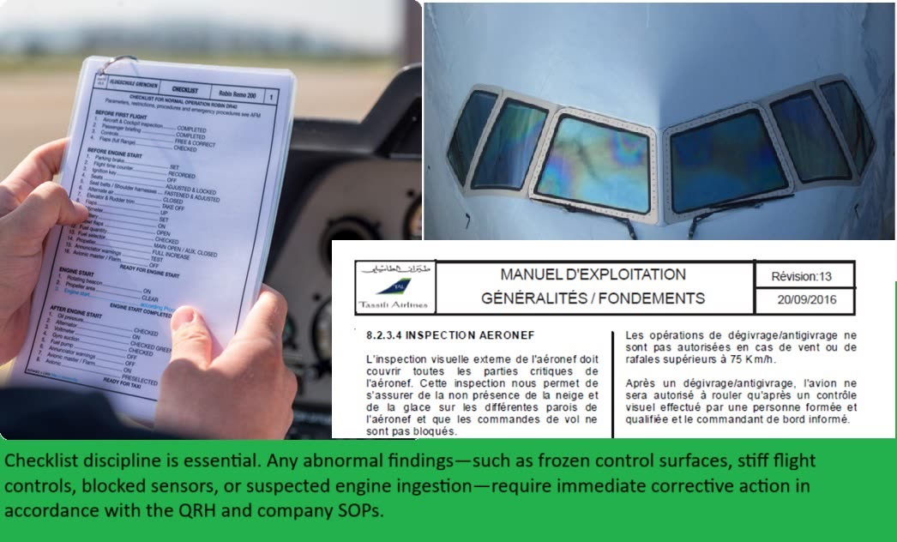
Cold-weather preparation follows the checklist and the Operations Manual — and takes extra time.
Cold soak
An aircraft is cold-soaked when its structure, fluids and equipment have cooled to the ambient temperature — usually after several hours parked outside in the cold, or after a long flight at high altitude. Cold soak affects nearly every system: fluids become thicker, seals harden, batteries lose capacity, and water freezes.
Overnight parking (as the company procedure and AFM specify)
Covers and plugs fitted on engines, probes and inlets where available. Record them so they are removed before flight.
Potable water and waste systems drained if the aircraft will be unheated, to prevent pipes, tanks and valves from freezing.
Parking brake: after taxiing through slush or snow, wet brakes can freeze. The common practice is to chock the wheels and release the parking brake when permitted.
Batteries: in extreme cold, some types require removal or a heated location.
Fuel: drain water from the tank sumps as maintenance requires.
Doors closed to keep snow out and reduce cabin cooling.
Where possible, park the aircraft nose into the wind or in a hangar when heavy snow or freezing precipitation is forecast.
Preparing a cold-soaked aircraft
Plan for extra time. Cabin heating, de-icing and systems warm-up all take longer.
Check that all covers and plugs are removed and that no snow or ice remains in inlets, wheel wells, vents and drains.
Check tyre pressures. Pressure falls by about 1 % for every 3 °C drop in temperature, so a tyre set in a warm hangar will be under-inflated outside.
Hydraulic, oil and strut indications may read differently when cold. Follow the servicing procedures for cold temperatures.
Oxygen bottle pressure is lower in the cold. Use the temperature-corrected minimum pressure chart.
Switch on window heat early, at the low setting if your type has one, to avoid thermal shock to cold windshields.
Warm the cabin before boarding when possible, using the APU or ground air conditioning.
Key takeaways
Cold soak affects fluids, seals, batteries, water systems and tyres.
Drain water systems, fit covers, and chock with the parking brake released after slush taxi (as the SOP states).
Tyre pressure drops about 1 % per 3 °C — check it outside.
Plan extra time for the preparation of a cold-soaked aircraft.
Knowledge check
A tyre was set to the correct pressure at +15 °C in a hangar. The aircraft is now outside at −15 °C. What do you expect?
Pressure about 10 % lower
No change in pressure
Pressure about 10 % higher
Pressure about 30 % lower
Answer: A. A 30 °C drop at about 1 % per 3 °C gives roughly a 10 % reduction in tyre pressure.
Module 5 · Aircraft Systems in the Cold
Lesson 20: Engines and APU in Cold Weather
Lesson 20 of 30 · about 8 min
Learning objectives
Apply cold-start considerations for engines and APU.
Use engine anti-ice correctly on the ground.
Explain engine run-up procedures for ice shedding in freezing fog and precipitation.
Monitor every engine parameter during cold starts and in icing conditions.
Cold starts
Oil is more viscous. Expect higher oil pressure and slower rotation at first. Some engines need a minimum oil temperature before take-off thrust can be used.
Start times are longer. Monitor N2/N1, EGT and oil pressure closely. Know the starter duty cycle limits, and the hung start and no-light-off procedures.
Warm-up: the AFM gives a minimum warm-up time after a cold soak before high thrust. Plan it into the taxi.
Batteries have less capacity in the cold. Use ground power or the APU for engine starts where possible.
APU: check that the inlet and exhaust are free of snow and ice. The APU may need more time to start and stabilise.
Engine anti-ice on the ground
Switch engine anti-ice on whenever icing conditions exist on the ground or are expected for take-off — OAT 10 °C or below with visible moisture, or with snow, ice, slush or standing water on the surfaces (Lesson 4). Follow the AFM for the timing, such as immediately after engine start, and before entering icing conditions in flight.
Do not forget
Engine inlet and probe ice can give false thrust indications (see the Air Florida 90 case in Lesson 30). Operate engine anti-ice as the AFM requires, and cross-check thrust with all engine parameters.
Engine run-ups for ice shedding
When taxiing or holding for a long time in freezing fog, freezing precipitation or heavy snow, ice can build up on the fan blades and spinner. Many AFMs require periodic run-ups to a specified thrust for a specified time to shed this ice, and a run-up before take-off. Follow the exact values and intervals in your FCOM, and keep clear of other aircraft, vehicles and people behind you.
Turboprops and propellers
Propellers must be free of ice and snow before engine start.
Propeller de-ice and engine intake anti-ice/de-ice are used as the AFM specifies.
Propeller blast can blow snow and slush onto other aircraft and onto your own tail.
Engine anti-ice on whenever icing conditions exist on the ground — per AFM.
Periodic run-ups shed fan ice in freezing fog and precipitation.
Iced probes can give false thrust indications — cross-check engine parameters.
Knowledge check
You are holding for 25 minutes in freezing fog. What engine-related action does the AFM typically require?
Shut down one engine
Periodic engine run-ups to shed fan ice, as specified
Switch engine anti-ice off to increase thrust
Nothing until take-off
Answer: B. In freezing fog, ice can build up on fan blades. Many AFMs require periodic run-ups to a specified thrust for a specified time to shed it.
Module 5 · Aircraft Systems in the Cold
Lesson 21: Aircraft Systems in Cold Conditions
Lesson 21 of 30 · about 8 min
Learning objectives
Describe the effects of low temperatures on hydraulic, pneumatic, electrical and landing gear systems.
Recognise cold-related problems with doors, slides, windows and water systems.
Apply warm-up and checking procedures before flight.
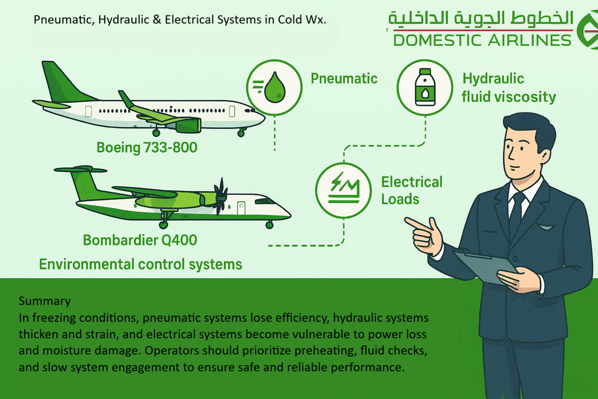
Cold weather affects pneumatic, hydraulic and electrical systems.
Hydraulics
Hydraulic fluid becomes more viscous, so actuators move more slowly and pumps work harder.
Cold seals contract and harden. Small leaks may appear after a cold soak and may stop after warm-up. Report them to maintenance.
Reservoir levels and accumulator pre-charge pressures read lower in the cold. Use the temperature-corrected values.
Operate the systems as the FCOM requires to warm the fluid before flight-control checks.
Pneumatics and air conditioning
Water in ducts, water separators and drains can freeze. Check for unusual pack behaviour or fault messages.
Bleed air demand from anti-ice systems reduces the bleed available for air conditioning and engine thrust.
Electrical and avionics
Battery capacity is significantly lower in the cold. Check the voltage before an APU start on battery power.
Displays and some avionics may need time to warm up. Follow the FCOM for warm-up before alignment.
Landing gear and brakes
Shock struts can appear low after cold soak, because the gas and fluid contract. Check the servicing charts.
Brakes can freeze after taxiing through slush or after washing. Check that the wheels turn at the start of taxi, and use gentle braking to dry and warm them.
Ice and packed snow in wheel wells and on gear doors and switches can prevent retraction or extension, or cause false indications.
Doors, slides and windows
Door seals can freeze to the frame. Do not force a frozen door. Follow the procedure, and ask for warm air or de-icing if needed.
Slide bottle pressure is lower in the cold, and slides inflate more slowly. Check the temperature-corrected pressure gauges during the walk-around.
Windshields: switch on window heat early to avoid thermal stress. Do not use hot fluid or hot water on cold windshields.
Water and waste
Potable water lines, drains, waste tanks and valves freeze quickly in an unheated aircraft. If the aircraft was not drained overnight, check with maintenance before using the systems, and report any frozen lines. Lavatory and galley drains that freeze can lead to flooding or, in flight, ice that can break off and strike the airframe or engines.
Key takeaways
Cold hydraulic fluid slows actuators; seal leaks may appear after cold soak.
Batteries, slide bottles and oxygen bottles show lower values in the cold — use corrected charts.
Frozen brakes and iced wheel wells are common after slush taxi.
Never force a frozen door; switch on window heat early.
Knowledge check
During the walk-around at −20 °C, an escape slide bottle gauge reads lower than usual. What should you do?
Ground the aircraft immediately
Compare it with the temperature-corrected pressure chart
Ignore it, because slides always work
Ask the cabin crew to warm the slide
Answer: B. Gas bottle pressures drop with temperature. The reading must be compared with the temperature-corrected minimum value before any decision.
Module 5 · Aircraft Systems in the Cold
Lesson 22: Fuel Management at Low Temperatures
Lesson 22 of 30 · about 8 min
Learning objectives
State the freezing points of common jet fuels and the operational fuel temperature limit.
Manage low fuel temperature in flight.
Plan winter fuel for de-icing, taxi and holding.
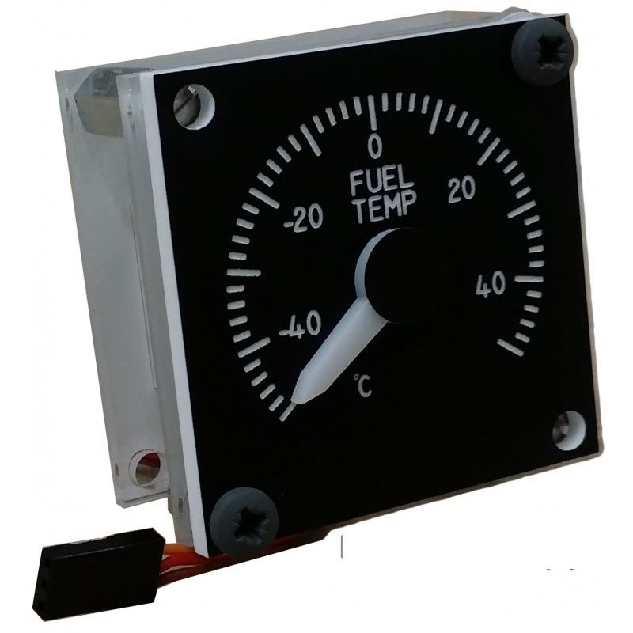
Fuel temperature must stay above the limit — monitor it on long, cold sectors.
Fuel freezing points
Fuel
Maximum freezing point (specification)
Jet A-1
−47 °C
Jet A
−40 °C
Fuel does not freeze solid at once. As it cools, wax crystals form, which can block filters and reduce flow. The AFM limit is usually the fuel freezing point plus a margin — commonly 3 °C above the freezing point — or a fixed minimum fuel temperature, whichever is higher. If the actual freezing point of the uplifted fuel is known from the fuel documentation, the AFM may allow its use.
When fuel from different sources is mixed (for example, Jet A uplifted on top of Jet A-1), the most restrictive freezing point applies unless the actual value of the mix is known.
Low fuel temperature in flight
On long sectors at high altitude through very cold air, fuel temperature falls slowly towards the total air temperature (TAT). If the fuel temperature approaches the limit:
Increase speed — a higher Mach number raises TAT through ram-air heating. Roughly +0.01 Mach gives about +0.5 to +0.7 °C TAT;
Descend into warmer air, if it is available;
Change route away from the coldest air mass.
Every option costs fuel, so act early. Fuel temperature changes slowly, and a corrective action can take a long time to show an effect.
Water and ice in fuel
Fuel always contains some dissolved water. At low temperatures it comes out as droplets and ice crystals. Fuel heaters and fuel/oil heat exchangers deal with normal amounts. Unusual accumulations of ice in the fuel system have caused engine power problems. A well-known case is the 2008 Boeing 777 accident at London Heathrow (BA38), where ice released from the fuel system restricted the fuel flow during the final approach. Regular water draining by maintenance is an important defence.
Winter fuel planning
Add fuel for the expected de-icing delay, longer taxi times, APU use, and the possibility of returning for a second treatment.
Add fuel for holding at a destination with snow clearance or reduced runway capacity, and for a more distant alternate if nearby airports have the same weather.
Remember the cold-soak effect: tankering large quantities of very cold fuel can lead to frost or clear ice on the wings at the next station (Lesson 3).
Key takeaways
Jet A-1 freezes at −47 °C, Jet A at −40 °C; the limit is typically the freezing point + 3 °C.
Low fuel temperature in flight: increase Mach, descend or reroute — act early.
Plan extra fuel for de-icing, taxi, holding and distant alternates.
Knowledge check
Fuel temperature is approaching the limit in cruise. Which action raises the fuel temperature?
Reducing speed
Climbing higher
Increasing Mach number or descending into warmer air
Switching off the fuel pumps
Answer: C. Increasing Mach number raises TAT through ram-air heating, and descending normally brings warmer air. Both slowly warm the fuel.
Module 5 · Aircraft Systems in the Cold
Lesson 23: Flight Controls, Fluid Residues and In-flight Icing
Lesson 23 of 30 · about 9 min
Learning objectives
Perform an effective flight-control check after de-icing.
Recognise the hazard of thickened fluid residues.
Operate ice protection systems and respond to SLD and tailplane icing.
Ice behind the protected areas is a warning sign of severe icing.
Flight-control check
After de-icing and before take-off, check that the flight controls move full and free in the correct sense, as the checklist requires.
Check smoothly and slowly. Any stiffness, restriction or unusual noise is a reason to stop and investigate. Do not take off with doubtful controls.
Ice or snow in control surface gaps and hinges can restrict movement even when the surfaces themselves look clean.
Thickened fluid residues
Type II and IV fluids can dry out and leave a residue in the aerodynamically quiet areas of the aircraft. This is more likely when they are used for one-step treatments without a hot Type I de-icing step. When rehydrated by rain or humidity, the residue swells into a gel that can freeze in flight.
Reported symptoms
Restricted or stiff elevator, aileron or trim movement, often at high altitude, sometimes with vibration. Report any unusual control feel in the technical log. Maintenance carries out residue inspections and cleaning at the intervals in the maintenance programme.
Ice protection systems
Thermal (bleed air or electrical) anti-ice on wing leading edges, engine inlets, probes and windows: switch on before or when entering icing conditions, as the AFM requires.
Pneumatic de-icing boots on many turboprops: current guidance for most modern aircraft is to activate them at the first sign of ice and keep them operating. Follow your AFM.
Ice detectors give a warning, but primary or advisory status depends on the type. Know which yours is.
Use the minimum speeds for icing and the autopilot limitations in icing conditions from the AFM. The autopilot can hide changes in handling until it disconnects.
Severe icing and SLD
Signs of severe icing or supercooled large droplets include:
ice behind the protected areas, such as on the upper or lower wing surface aft of the boots;
ice on the side windows, or water splashing and streaming on the windshield at sub-zero temperatures;
unusual or uncommanded roll, or unexpected aileron or trim forces;
a rapid loss of speed or climb performance.
Action: tell ATC and leave the icing conditions immediately — change altitude or heading, or move to colder or warmer air. Disconnect the autopilot carefully if the AFM requires it, holding the controls firmly, and avoid abrupt manoeuvres.
Tailplane icing
The tail is thinner than the wing and collects ice more efficiently. A tailplane stall is most likely when the flaps are extended during the approach. Symptoms are light or buffeting elevator forces, difficulty in trimming, or a sudden nose-down pitch. Recovery differs from a wing stall, and the procedure is type-specific — typically return the flaps to the previous setting and pull back on the controls. Follow the AFM/QRH.
Key takeaways
Full and free control check after de-icing — never take off with doubtful controls.
Thickened fluid residues can freeze in flight and restrict controls; report unusual feel.
Severe icing or SLD: inform ATC and leave the conditions immediately.
Tailplane stall is most likely with flap extension; recovery is type-specific.
Knowledge check
In flight, you notice ice forming on the side windows and aft of the wing de-icing boots. What should you do?
Continue and cycle the boots more often
Treat it as possible severe icing/SLD — inform ATC and leave the conditions immediately
Extend flaps to increase lift
Engage the autopilot to reduce workload
Answer: B. Ice on side windows and behind protected areas are signs of severe icing or SLD. Inform ATC and leave the icing conditions without delay.
Module 6 · Operations and Human Factors
Lesson 24: Cold Temperature Altimetry and En-route Considerations
Lesson 24 of 30 · about 9 min
Learning objectives
Explain why a barometric altimeter over-reads in cold air.
Apply cold temperature corrections to minimum altitudes.
Recognise the limits of baro-VNAV approaches at low temperature.
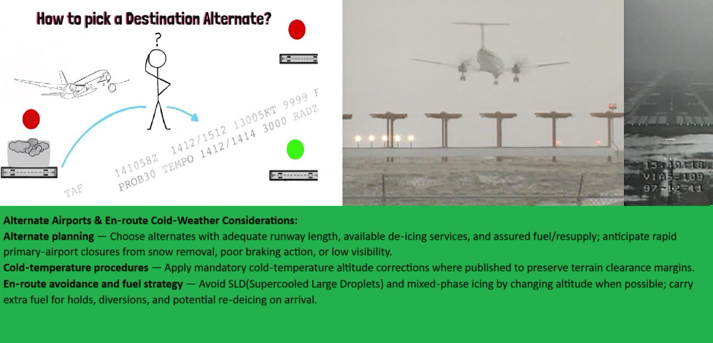
Choose alternates that are not affected by the same winter weather.
Why cold air is dangerous for terrain clearance
A barometric altimeter is calibrated for the ICAO Standard Atmosphere (ISA). In air colder than ISA, the pressure levels are closer together. The altimeter then shows a higher altitude than the true altitude. The aircraft is lower than indicated — “from high to low, look out below”.
The error is zero at the altimeter setting source (the aerodrome) and grows with height above it. It is greatest in very cold air and over high terrain.
Rule of thumb
Approximation
Correction ≈ 4 % of the height above the aerodrome for every 10 °C below ISA (ISA deviation measured at the aerodrome).
Example: aerodrome elevation 2 300 ft, temperature −20 °C. ISA at 2 300 ft ≈ 15 − 4.6 ≈ +10 °C, so ISA −30 °C. Initial approach fix at 5 300 ft, which is 3 000 ft above the aerodrome. Correction ≈ 3 × 4 % × 3 000 = 360 ft. Fly 5 660 ft, or round it up as the company procedure requires.
For accurate values, use the ICAO PANS-OPS cold temperature correction table or the company table. They apply to the published altitudes on the approach: minimum sector, initial, intermediate and final approach fix altitudes, step-down fixes, missed approach altitudes and the DA/MDA.
Applying corrections
The pilot is responsible for applying cold temperature corrections to minimum altitudes, unless the Operations Manual states otherwise.
Tell ATC when you apply corrections to an assigned or published altitude, because it affects separation.
Do not correct altitudes assigned by radar controllers without coordination. Ask whether the assigned altitude is temperature-corrected if you are near terrain.
The correction applies to the altimeter altitudes, not to radio altimeter heights (e.g. a CAT II/III decision height).
Baro-VNAV approaches
A baro-VNAV glide path is affected by the same error: in cold air the actual path is lower and shallower than published. RNP approach charts with LNAV/VNAV minima state a minimum temperature below which baro-VNAV must not be used. Some FMS can apply temperature compensation. Use it only as your FCOM and Operations Manual permit.
En-route winter considerations
Very cold upper air masses: watch the fuel temperature (Lesson 22).
Minimum en-route altitudes over high terrain need cold temperature awareness, especially at night with weak pressure gradients.
Alternates may be affected by the same snow, icing or freezing rain as the destination. Check runway condition forecasts and de-icing availability.
Key takeaways
In cold air the aircraft is lower than the altimeter shows.
Correction ≈ 4 % per 10 °C below ISA per height above the aerodrome — use the official table.
Correct minimum and approach altitudes and inform ATC; respect baro-VNAV temperature limits.
Knowledge check
Aerodrome ISA deviation is −20 °C. A fix is 2 000 ft above the aerodrome. Using the rule of thumb, what is the approximate correction?
About 40 ft
About 160 ft
About 400 ft
About 800 ft
Answer: B. 2 × 4 % = 8 %; 8 % of 2 000 ft = 160 ft. Add it to the published altitude.
Module 6 · Operations and Human Factors
Lesson 25: Dispatch, MEL/CDL and Winter Flight Planning
Lesson 25 of 30 · about 8 min
Learning objectives
Recognise MEL and CDL items that restrict winter or icing operations.
Plan alternates and fuel for winter conditions.
Use NOTAM and SNOWTAM information in flight planning.
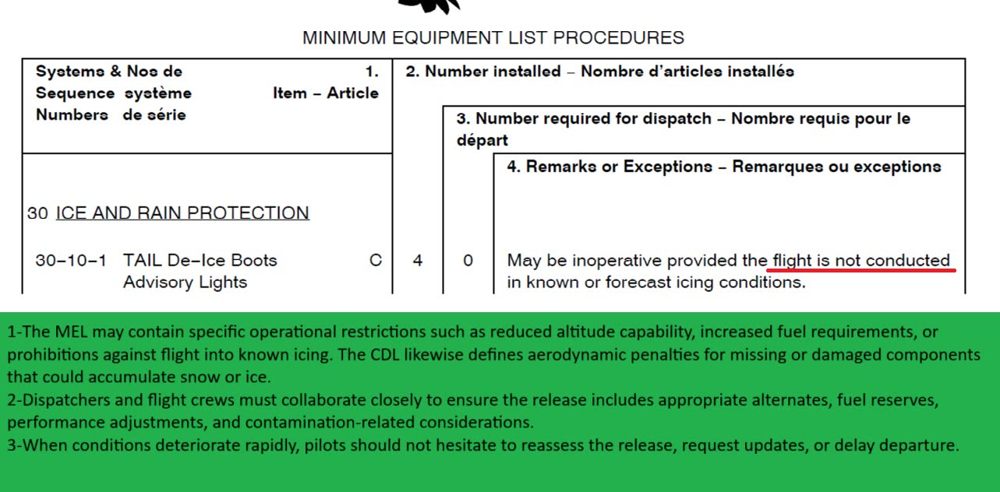
Read every MEL item for icing restrictions before a winter dispatch.
MEL items with winter impact
Many MEL items allow dispatch with a condition such as “provided the aircraft is not operated in known or forecast icing conditions”. In winter, those conditions often make the dispatch impossible. Typical items to check:
Wing or engine anti-ice valves and controllers;
Probe and window heat;
Ice detection system;
Pneumatic boots and propeller de-ice (turboprops);
APU — needed for heating, engine starts and, at some stations, for de-icing with the engines shut down;
Thrust reversers and anti-skid, which affect landing and RTO performance on contaminated runways;
Windshield wipers and rain repellent.
CDL items (missing panels, seals or fairings) can change the performance and may also allow contamination into structures. Read the full MEL/CDL conditions, including operational (O) and maintenance (M) procedures.
Weather and aerodrome information
SNOWTAM and RCR: runway conditions, cleared widths, snowbanks and the time of observation.
NOTAM: runway and taxiway closures for snow clearing, de-icing facility status, and lighting changes.
TAF and forecasts: precipitation type and timing at departure, destination and alternates.
Alternate selection
Choose alternates that are not affected by the same weather system, where possible.
Check runway length against the expected runway condition, and check that de-icing and snow clearing are available.
Consider the opening hours and handling capability of the alternate in winter, and overnight parking if a return is not possible.
Winter fuel
Add fuel for de-icing delays, extended taxi, a second treatment, holding, and a more distant alternate (see Lesson 22). The commander's extra fuel decision should be based on the specific threats briefed, not on habit.
Stations without de-icing
If an aircraft must overnight at a station without de-icing equipment, consider a hangar, covers, departure time and an alternative plan. The Dryden accident (Lesson 30) shows the danger of a station without the means to de-ice the aircraft properly.
Key takeaways
Check every MEL item for icing restrictions — winter conditions often prevent dispatch.
Use SNOWTAM, RCR, NOTAM and TAF for departure, destination and alternates.
Choose alternates outside the same weather system, with de-icing available.
Knowledge check
An MEL item allows dispatch “provided the aircraft is not operated in known or forecast icing conditions”. The TAF forecasts −SN at departure. Can you dispatch?
Yes, provided you avoid clouds
No — forecast icing conditions exist at departure
Yes, if the item is placarded
Yes, at night only
Answer: B. Snow with a temperature of 10 °C or below is a forecast icing condition, so the MEL condition cannot be met.
Module 6 · Operations and Human Factors
Lesson 26: Cabin and Passenger Safety in Cold Conditions
Lesson 26 of 30 · about 7 min
Learning objectives
Identify cabin and passenger hazards in winter operations.
Describe the role of cabin crew in reporting contamination.
Plan for an evacuation in cold conditions.
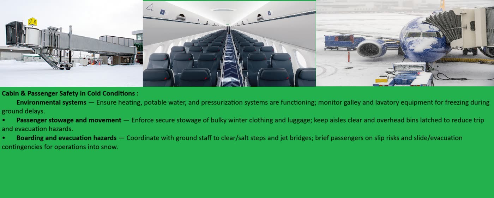
Cabin safety in winter: boarding, de-icing announcements and reporting what you see.
Boarding and disembarking
Steps, jet bridges and ramps can be icy. Make sure they are treated and lit, and have handrails. Remind passengers to hold on.
Keep doors closed when not in use to preserve cabin heat and keep snow out.
Glycol on the ramp is very slippery. Passengers walking on the apron must be kept away from de-icing areas.
During de-icing
Inform the passengers before de-icing starts. They will hear noise, see fluid on the windows, and may smell glycol.
Cabin crew must report smoke, unusual smells or fumes to the flight deck at once.
Passengers should stay seated with seat belts fastened, because the aircraft may move soon after treatment.
Cabin crew as observers
Cabin crew can often see the wings better than the pilots. A clear company procedure is needed so that cabin crew know:
what to look for — snow building up, a dull surface, ice on leading edges;
how to report it — immediately, directly to the commander, even during busy phases;
that their report will be welcomed and acted on.
The Dryden inquiry (Lesson 30) found that cabin crew and passengers had seen snow on the wings, but this information did not reach the flight deck.
Evacuation in cold conditions
Slides inflate more slowly and may be less stable in strong wind and on icy surfaces.
Overwing exits and wing surfaces may be covered with ice, snow or fluid — extremely slippery.
Passengers will be outside, often without coats. Move them away from the aircraft, keep groups together and get them to shelter as soon as possible. Watch for hypothermia, especially in children and elderly passengers.
Communicate with the airport emergency services about warm shelter and transport.
Key takeaways
Treat and light steps and ramps; keep passengers away from de-icing areas.
Cabin crew report fumes and any contamination they see — immediately.
Cold evacuation: slower slides, icy wings, and hypothermia risk after evacuation.
Knowledge check
A cabin crew member sees snow building up on the wing while the aircraft is holding for take-off. What should they do?
Wait until after take-off to mention it
Report it immediately and directly to the commander
Tell the passengers to stay calm
Write it in the cabin log
Answer: B. Possible wing contamination before take-off is safety-critical information. It must be reported immediately and directly to the commander.
Module 6 · Operations and Human Factors
Lesson 27: CRM and Threat and Error Management in Winter Operations
Lesson 27 of 30 · about 8 min
Learning objectives
Identify typical winter threats and errors.
Apply TEM countermeasures, including briefings and pre-agreed decision points.
Recognise and resist plan continuation bias and commercial pressure.
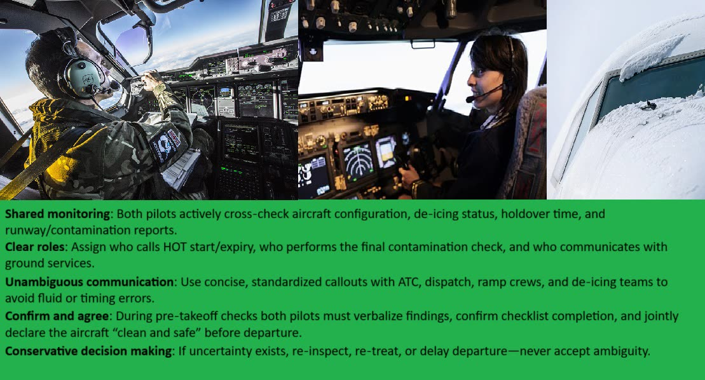
Shared monitoring and clear decision points protect the crew from time pressure.
Typical winter threats
Changing precipitation type and intensity; darkness and low visibility;
Using the wrong HOT table, fluid, concentration or start time;
Not updating the HOT when conditions change;
Skipping or rushing the winter-specific checklist items: anti-ice, run-ups, flaps after slush taxi, flight-control check;
Using reduced thrust or wrong performance data on a contaminated runway;
Assuming the de-icing crew treated an area — or assuming the flight crew is ready.
Countermeasures
Winter briefing. Weather, runway conditions, de-icing plan, HOT strategy, performance, anti-ice, taxi route and hazards.
Pre-agreed decision points. “If HOT expires before take-off, we return.” “If RWYCC falls below 3, we wait or divert.” Decisions made calmly before the pressure arrives are better than decisions made under it.
Monitoring and cross-checking. Both pilots calculate the HOT independently; the pilot monitoring tracks time and conditions.
Speaking up. Any crew member who sees a threat must say so clearly. Use the company's assertiveness model — for example: get attention, state the concern, propose an action, get agreement.
Workload management. Do the de-icing and HOT tasks at a planned moment, not during the taxi or take-off briefings.
Plan continuation bias
The closer we get to completing a plan, the harder it is to change it — even when the information shows we should. In winter this appears as “just one more aircraft ahead of us, the HOT will be fine”, or “the runway was fine for the last aircraft”. Recognise it, name it, and go back to your pre-agreed decision points.
Organisational support
Domestic Airlines supports any crew decision to delay, return for de-icing or divert for safety reasons. No commercial consideration justifies taking off with a contaminated aircraft.
Key takeaways
Brief winter threats and agree decision points before the pressure starts.
Both pilots calculate HOT; the pilot monitoring tracks time and conditions.
Recognise plan continuation bias — go back to your decision points.
Knowledge check
Which countermeasure best protects a crew from time pressure at the holding point?
Taxiing faster
A pre-agreed decision point, briefed before taxi, for when HOT expires
Skipping the HOT calculation to save time
Asking ATC for a shorter route
Answer: B. Decision points agreed calmly before taxi remove the need to decide under pressure and help resist plan continuation bias.
Module 6 · Operations and Human Factors
Lesson 28: Abnormal and Emergency Situations in Cold Weather
Lesson 28 of 30 · about 9 min
Learning objectives
Recognise ice-related abnormal situations on the ground, at take-off and in flight.
Apply the general principles for handling them.
Prepare for a rejected take-off, a go-around and an evacuation in winter conditions.
Engine ice ingestion and icing
Symptoms: high vibration, surges or stalls (bangs, EGT rise, fluctuating N1/N2), flameout.
Causes: ice shed from the wings or fuselage (especially with rear-mounted engines), fan ice build-up in freezing fog, inlet icing without anti-ice, ice crystal icing at high altitude.
Actions: fly the aircraft first. Then follow the QRH engine surge/stall, vibration or relight procedures, and use engine anti-ice as required. With a multiple-engine event, reduce thrust only as the QRH directs.
Stall and roll-off after take-off with a contaminated wing
An aircraft with contaminated wings can roll or stall right after lift-off, possibly before the stall warning. Signs are an uncommanded roll, buffet, a failure to climb at the normal pitch attitude, or stick-shaker activation at a speed above normal. Apply the stall recovery as trained: reduce the angle of attack, level the wings and use thrust as required. In ground effect, keep the pitch attitude only as high as needed to stay airborne, accelerate, and climb gradually. Prevention — a clean aircraft — is the only reliable defence.
Frozen or restricted flight controls
If a control is restricted before take-off, do not take off. If a restriction appears in flight, use the QRH procedure for jammed controls. Avoid large forces that could cause a sudden release, and consider descending into warmer air to melt ice or frozen residue.
Landing gear and brakes
Gear that does not retract or does not indicate correctly after a slush take-off: follow the QRH. Do not cycle the gear unless the procedure allows it.
Frozen brakes at the start of taxi: stop, and ask for maintenance. Do not use high thrust to break them free.
Anti-skid or brake failures on contaminated runways greatly increase the landing distance. Recalculate with the failure, and divert if necessary.
Rejected take-off and go-around
Brief the RTO for the contaminated runway — lower V1, directional control in a crosswind with reverse thrust.
For a go-around after ice accretion, use the AFM speeds and configurations, and expect reduced climb performance.
Evacuation in winter
Assess whether an evacuation is really needed, or whether a precautionary disembarkation is safer. If an evacuation is needed, consider the wind direction, slippery surfaces and the slide stability. Arrange shelter and transport with the emergency services as soon as possible (Lesson 26).
Key takeaways
Ice ingestion: vibration, surge, EGT rise — fly the aircraft, then follow the QRH.
A contaminated wing can stall before the warning — prevention is the only real defence.
Never take off with restricted controls; never use high thrust on frozen brakes.
Knowledge check
Immediately after lift-off, the aircraft rolls unexpectedly and buffets at a normal speed after de-icing in snow. What is the most likely cause?
A thrust reverser problem
Wing contamination reducing lift and causing an early stall
Too much fuel in the centre tank
Engine anti-ice left on
Answer: B. Uncommanded roll and buffet just after lift-off, in conditions where contamination is possible, strongly suggest a contaminated wing stalling early and asymmetrically.
Module 6 · Operations and Human Factors
Lesson 29: Regulations, Standards and Safety Management
Lesson 29 of 30 · about 8 min
Learning objectives
Identify the main international regulations and standards for cold weather operations.
Describe the elements of a ground de-icing/anti-icing programme.
Use the safety management system to report winter hazards.
ICAO Doc 9640 and Circular 355 — part of the international framework.
International framework
Source
Content
ICAO Annex 6, Part I
Operator responsibilities, including the requirement that an aircraft is not to take off unless it has been inspected for icing and, if necessary, de-iced and anti-iced.
ICAO Doc 9640
Manual of Aircraft Ground De-icing/Anti-icing Operations.
ICAO Annex 14 and PANS-Aerodromes (Doc 9981)
Global Reporting Format for runway surface conditions.
ICAO Doc 10064
Aeroplane Performance Manual, including contaminated runway performance.
EASA Air Operations
CAT.OP.MPA.250 (ice and other contaminants — ground procedures) and CAT.OP.MPA.255 (in-flight procedures).
FAA
14 CFR 121.629 (Clean Aircraft Concept and de-icing programme) and AC 120-60 (ground de-icing/anti-icing programme).
Transport Canada / FAA
Holdover time guidelines, published every winter season.
SAE International
AS6285 (de-icing/anti-icing processes), AS6286 (training and qualification), AMS1424 and AMS1428 (fluid specifications).
National regulations from the civil aviation authority, the aircraft AFM, and the Domestic Airlines Operations Manual implement these standards for our operation. They are the documents you must follow.
The ground de-icing/anti-icing programme
Operators must have an approved programme that typically includes:
responsibilities of the operator, the commander and the service providers;
the procedures for inspection, treatment, communication and the anti-icing code;
the holdover time guidelines to be used, and how to use them;
initial and recurrent training for flight crew, cabin crew, dispatchers and ground staff;
quality control of fluids, equipment and service providers;
the pre-take-off check and pre-take-off contamination check procedures.
Safety management and reporting
Winter operations produce many precursors to accidents. Report them through the company safety reporting system:
contamination found after de-icing, or a take-off with suspected contamination;
communication errors with de-icing crews or ATC;
fluid smells or smoke in the cabin;
braking action worse than reported, and runway excursions or near-excursions;
control stiffness or restriction, and residue findings;
holdover times exceeded, or pressure to depart.
Domestic Airlines operates a just culture: honest reports of errors and hazards are used to learn and to improve the system, not to blame individuals.
Key takeaways
ICAO, EASA, FAA, Transport Canada and SAE set the international framework; national rules, the AFM and the Operations Manual apply it.
Operators need an approved ground de-icing/anti-icing programme with training and quality control.
Report winter hazards and errors — just culture protects honest reporting.
Knowledge check
Which organisation publishes the holdover time guidelines used worldwide each winter?
IATA and ICAO
The FAA and Transport Canada
Each airport authority
The aircraft manufacturer only
Answer: B. Holdover time guidelines are published each season by the FAA and Transport Canada and are adopted by operators worldwide.
Module 6 · Operations and Human Factors
Lesson 30: Lessons from Accidents and Course Review
Lesson 30 of 30 · about 10 min
Learning objectives
Describe key cold weather accidents and their causal factors.
Link each accident to the defences covered in this course.
Review the essential principles before the final quiz.
Every rule in this course exists because of a real accident.
Accident case studies
Accident
What happened
Lesson for us
Air Florida 90 B737-200, Washington DC, January 1982
The engine anti-ice was off; iced engine pressure probes gave false high thrust indications, so the actual thrust was too low. Snow and ice were on the wings after a long wait following de-icing. The crew continued the take-off despite abnormal indications. The aircraft struck a bridge and fell into the Potomac River; 78 people died.
Use engine anti-ice when required. Cross-check thrust with all parameters. Respect the holdover time. Act on abnormal take-off indications.
Air Ontario 1363 Fokker F28, Dryden, Canada, March 1989
The aircraft took off in snow without de-icing. The APU was unserviceable, there was no ground start, and the engines could not be shut down. Snow was seen on the wings by cabin crew and passengers, but this was not reported to the flight deck. 24 people died. The inquiry highlighted organisational pressures and the Clean Aircraft Concept.
Never take off contaminated. Check MEL implications in winter. Cabin crew must report contamination. Organisational support for safe decisions.
SAS 751 MD-81, Gottröra, Sweden, December 1991
Clear ice formed overnight on the wings from cold-soaked fuel and was not removed. It broke off at take-off and was ingested by both rear-mounted engines, which surged and failed. The crew made a forced landing in a field. Everyone survived.
Clear ice is hard to see — use the tactile check. Rear-mounted engines are at particular risk.
USAir 405 Fokker F28, New York LaGuardia, March 1992
The aircraft was de-iced, then waited about 35 minutes in snow before take-off. Ice built up on the wings; the aircraft stalled just after lift-off and crashed into the water. 27 people died.
Holdover time is limited and is an estimate. Inspect before take-off. Return for re-treatment when in doubt.
American Eagle 4184 ATR 72, Roselawn, USA, October 1994
While holding in freezing drizzle (SLD), a ridge of ice formed behind the de-icing boots. It disturbed the airflow over the ailerons, causing a sudden roll upset. 68 people died.
Recognise SLD and leave icing conditions immediately. Know the autopilot limitations in icing.
Southwest 1248 B737-700, Chicago Midway, December 2005
The aircraft landed in snow on a contaminated runway with a tailwind. Reverse thrust was deployed late, and the landing distance assessment relied on optimistic assumptions. The aircraft overran into a road; a child in a car died.
Calculate landing distance at the time of arrival with an adequate margin. Deploy reverse thrust promptly.
The essential principles
Clean aircraft. No frost, ice, snow or slush on critical surfaces at take-off, unless the AFM explicitly permits it.
Holdover time is an estimate. It starts at the beginning of the final application. Reassess when conditions change. If it is exceeded: a PTCC within 5 minutes of take-off, or re-treat. Allowance times cannot be extended.
Check, do not assume. Use tactile checks for clear ice, the post-treatment check, the pre-take-off checks, and the full and free control check.
Communicate in closed loop with the de-icing crew, ATC and the cabin. Read back the anti-icing code.
Use the right performance data. RWYCC, contaminated runway data, no reduced thrust, and the landing distance at time of arrival with a margin.
Protect the systems. Anti-ice when icing conditions exist, run-ups in freezing fog, cold-soak precautions, fuel temperature limits.
Correct for cold. Apply altimeter corrections to minimum altitudes and respect baro-VNAV temperature limits.
Decide early. Brief winter threats, agree decision points, and resist pressure. Returning for de-icing is always the right choice when in doubt.
Next steps
You have now completed all the lessons. Take the final quiz: 20 questions drawn at random, with a pass mark of 80 %. After passing, you can print your certificate and watch the closing video.
Key takeaways
Most winter accidents combined contamination with time pressure and missed warnings.
Every defence in this course exists because of a real accident.
When in doubt: inspect, re-treat, recalculate — or do not go.
Knowledge check
Which accident is most closely associated with clear ice from cold-soaked fuel being ingested by rear-mounted engines?
Air Florida 90
SAS 751
Southwest 1248
American Eagle 4184
Answer: B. SAS 751 (MD-81, 1991): clear ice on the wings from cold-soaked fuel broke off at take-off and was ingested by both rear-mounted engines.
Training material only. It does not replace the Aircraft Flight Manual, FCOM, QRH, MEL or the Domestic Airlines Operations Manual, which always take precedence.